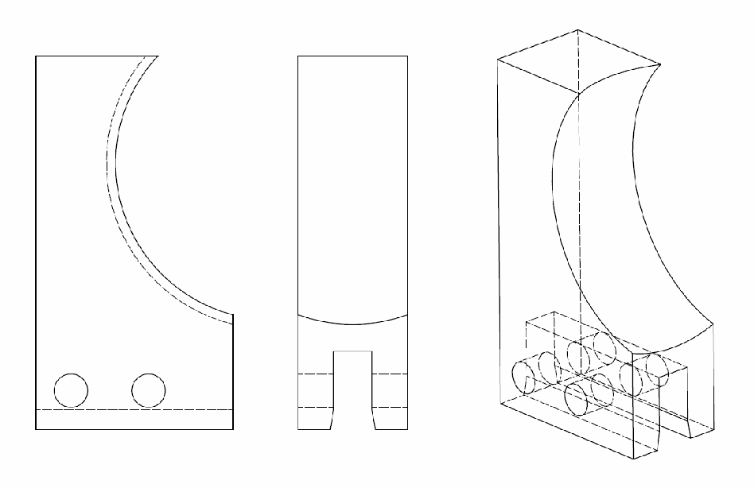
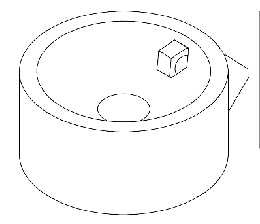
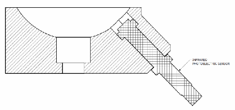
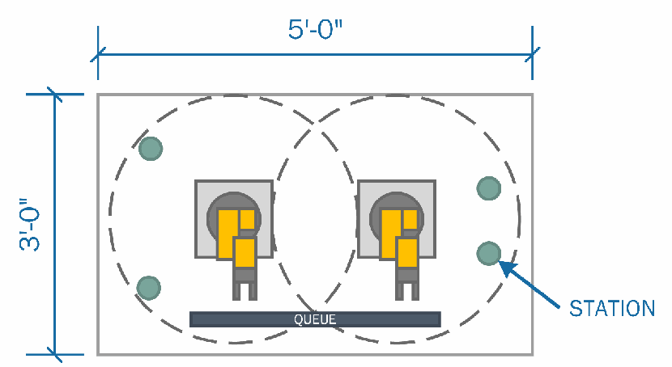
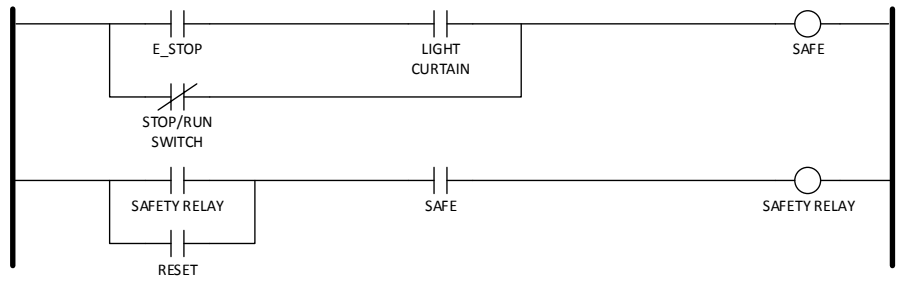
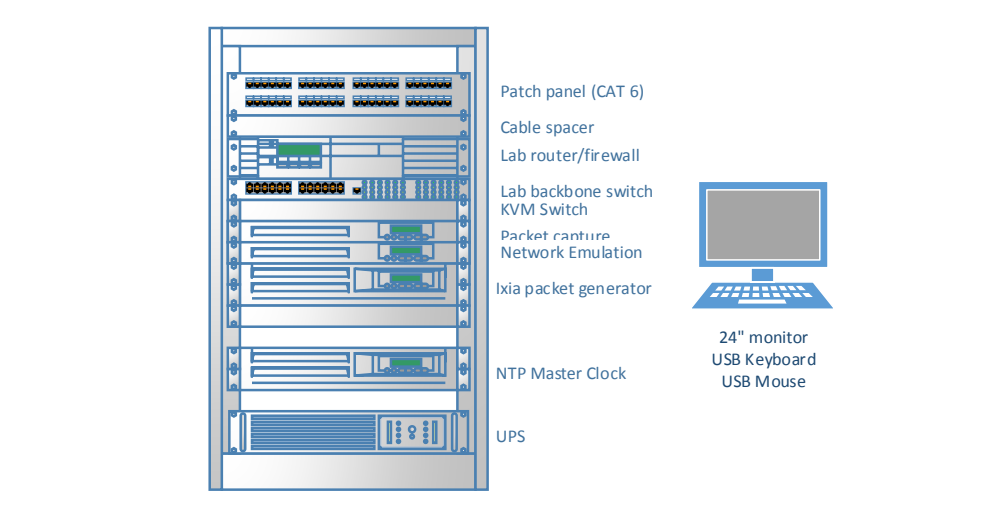
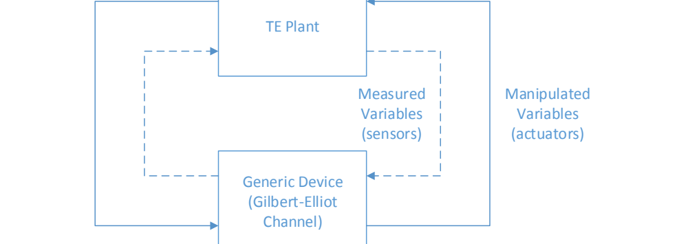
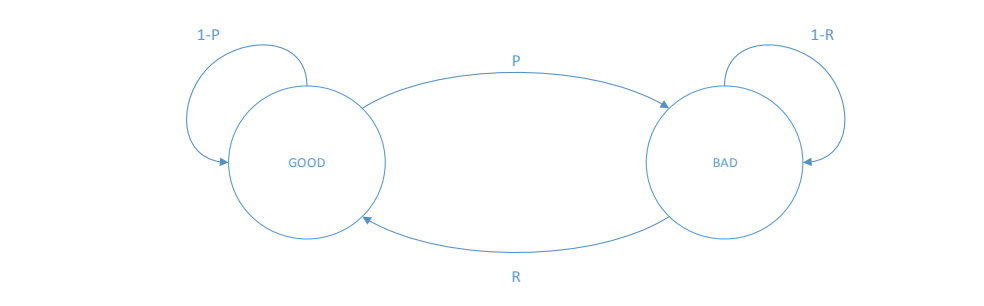
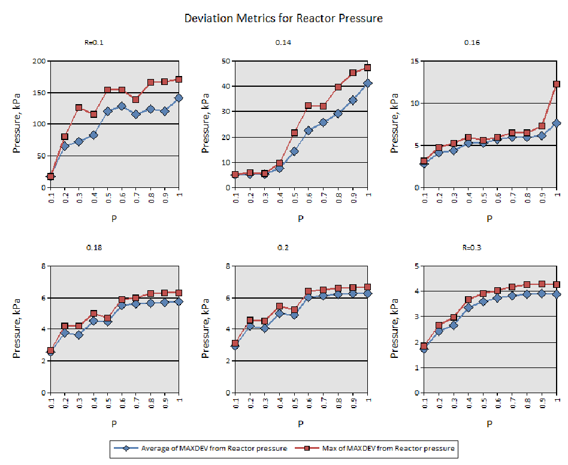

NIST IR 8089 日本語訳
英語タイトル : An Industrial Control System Cybersecurity Performance Testbed日本語タイトル : 産業用制御システムのサイバーセキュリティ性能テストベッド
公開日 : 2015-12-10
原文URL : https://csrc.nist.gov/pubs/ir/8089/final
翻訳編集 : 自動生成（有志による非公式の日本語訳）, 原文取得日 : 2026-10-31, 訳文 : 333 / 337 ブロック
[要約] NIST IR 8089 は、NIST が開発中の産業用制御システム（ICS）向けのサイバーセキュリティ性能テストベッドを説明する報告書です。テストベッドの目標は、国内および国際的な標準とガイドラインが規定するベストプラクティスと要件に従ってサイバーセキュリティ保護を備えた ICS の性能を測定することで、プラントや組立システム全体を複製せずに、動特性が遅いプロセスと速いプロセスを含む実世界の産業システムを可能な限り忠実にエミュレートします。構成は、テストベッドの設計方針と設計、性能メトリクス、ISA-99 のセキュリティ、結論です。テストベッドは、既存のセキュリティガイドラインと標準を検証する機会を提供し、研究者がセキュリティ技術を試す場として機能するとしています。
NISTIR 8089
NISTIR 8089
An Industrial Control System Cybersecurity Performance Testbed
産業用制御システムのサイバーセキュリティ性能テストベッド
Richard Candell
Timothy Zimmerman
Keith Stouffer
Richard Candell
Timothy Zimmerman
Keith Stouffer
This publication is available free of charge from:
http://dx.doi.org/10.6028/NIST.IR.8089
この刊行物は次の場所から無料で入手できます:
http://dx.doi.org/10.6028/NIST.IR.8089
［NIST のロゴ。公的な標章のため、この非公式サイトには掲載していません。原本 PDF を参照してください。］
NISTIR 8089
NISTIR 8089
An Industrial Control System Cybersecurity Performance Testbed
産業用制御システムのサイバーセキュリティ性能テストベッド
Richard Candell
Timothy Zimmerman
Keith Stouffer
Intelligent System Division
Engineering Laboratory
Richard Candell
Timothy Zimmerman
Keith Stouffer
インテリジェントシステム部門
工学研究所
This publication is available free of charge from:
http://dx.doi.org/10.6028/NIST.IR.8089
この刊行物は次の場所から無料で入手できます:
http://dx.doi.org/10.6028/NIST.IR.8089
November 2015
2015年11月
U.S. Department of Commerce
Penny Pritzker, Secretary
米国商務省
Penny Pritzker 長官
National Institute of Standards and Technology
Willie May, Under Secretary of Commerce for Standards and Technology and Director
国立標準技術研究所
Willie May、標準・技術担当商務次官兼所長
Table of Contents
目次
List of Tables
表の一覧
Table of Figures
図の一覧
Figure 1. Tennessee Eastman PROCESS MODEL — 4
図 1. テネシー・イーストマンのプロセスモデル — 4
Figure 2. TE Process Enclave Network Diagram — 6
図 2. TE プロセスエンクレーブのネットワーク図 — 6
Figure 3. TE Simulator Physical Architecture Deployment — 7
図 3. TE シミュレーターの物理アーキテクチャーの展開 — 7
Figure 4. Software Architecture used for Communications between TE Plant and OPC — 8
図 4. TE プラントと OPC の間の通信に使われるソフトウェアアーキテクチャー — 8
Figure 5. Software Architecture used for OPC Communications with the Controller — 9
図 5. コントローラーとの OPC 通信に使われるソフトウェアアーキテクチャー — 9
Figure 6. Robotic Assembly System Network Diagram — 10
図 6. ロボット組立システムのネットワーク図 — 10
Figure 7. Robotics Enclave Rack View — 11
図 7. ロボティクスエンクレーブのラックビュー — 11
Figure 8. Spherical object end-effector for robotic enclave — 12
図 8. ロボティクスエンクレーブ用の球形物体エンドエフェクター — 12
Figure 9. Spherical part receptacle for machining station — 12
図 9. 加工ステーション用の球形部品レセプタクル — 12
Figure 10. Robotic Assembly Table — 13
図 10. ロボット組立テーブル — 13
Figure 11. Emergency Stop Circuit — 13
図 11. 非常停止回路 — 13
Figure 12. Robotics Enclave Node Level Software Architecture — 14
図 12. ロボティクスエンクレーブのノードレベルのソフトウェアアーキテクチャー — 14
Figure 13. Fully assembled discrete manufacturing robotics enclave — 16
図 13. 完全に組み立てられた離散製造ロボティクスエンクレーブ — 16
Figure 14. Measurement Enclave Rack Deployment — 17
図 14. 測定エンクレーブのラック設置 — 17
Figure 15. ISA/IEC-62443 Organization of Standards Documents — 20
図 15. ISA/IEC-62443 の標準文書の構成 — 20
Figure 16. System Context for the Tennessee Eastman Enclave — 25
図 16. テネシー・イーストマンエンクレーブのシステムコンテキスト — 25
Figure 17. Tennessee Eastman Simulation Architecture using a Gilbert-Elliot Channel Model — 34
図 17. Gilbert-Elliot チャネルモデルを用いたテネシー・イーストマンのシミュレーションアーキテクチャー — 34
Figure 18. Simple Gilbert Channel Model for a Generic Network Device — 35
図 18. 汎用ネットワークデバイスの単純な Gilbert チャネルモデル — 35
Figure 19. Reactor Pressure Metrics for All Disturbances — 41
図 19. すべての外乱に対する反応器圧力メトリクス — 41
Figure 20. Standard Deviation of the Maximum Reactor Pressure Deviation for All Disturbances — 43
図 20. すべての外乱に対する最大反応器圧力偏差の標準偏差 — 43
Figure 21. Product Quality Metrics for All Disturbances — 44
図 21. すべての外乱に対する製品品質メトリクス — 44
Figure 22. Operating Cost Metric for All Disturbances — 45
図 22. すべての外乱に対する運用コストメトリクス — 45
Figure 23. Deviation of Operating Cost from Baseline — 46
図 23. ベースラインからの運用コストの偏差 — 46
1 Introduction
1 はじめに
The National Institute of Standards and Technology (NIST) is developing a cybersecurity performance testbed for industrial control systems.1 The goal of the testbed is to measure the performance of industrial control systems (ICS) when instrumented with cybersecurity protections in accordance with the best practices and requirements prescribed by national and international standards and guidelines. Examples of such standards and guidelines include ISA/IEC-62443 and NIST Special Publication 800-82 [1].
米国国立標準技術研究所（NIST）は、産業用制御システム向けのサイバーセキュリティ性能テストベッドを開発しています。1 このテストベッドの目標は、国内および国際的な標準とガイドラインが規定するベストプラクティスと要件に従ってサイバーセキュリティ保護を備えた産業用制御システム（ICS）の性能を測定することです。そのような標準とガイドラインの例には、ISA/IEC-62443 と NIST Special Publication 800-82 [1] があります。
The purpose of the testbed is to emulate real-world industrial systems as closely as possible without replicating an entire plant or assembly system. The testbed simulates a variety of industrial scenarios that include processes with slow dynamics and others with fast dynamics. Classification of faster versus slow is a relative determination and depends on the type of measurements being made. A slow process is one in which changes to state occur gradually over time. Processes with fast dynamics will exhibit a noticeable change of state soon after the system is perturbed.
このテストベッドの目的は、プラントや組立システム全体を複製することなく、実世界の産業システムを可能な限り忠実にエミュレートすることです。このテストベッドは、動特性が遅いプロセスと速いプロセスを含む、さまざまな産業シナリオをシミュレートします。速いか遅いかの分類は相対的な判断であり、行われる測定の種類によって異なります。遅いプロセスとは、状態の変化が時間をかけて徐々に起こるプロセスです。動特性が速いプロセスは、システムに摂動が加えられた直後に、状態の顕著な変化を示します。
Various industrial protocols are employed throughout the testbed including IP-routable and non-IP-routable protocols. Routable protocols include Internet Protocol (IP)-based protocols (e.g., Transmission Control Protocol (TCP) and User Datagram Protocol (UDP)) as well as industrial application layer protocols (e.g., EtherNet/IP, Open Platform Communication (OPC), and Modbus/TCP).
テストベッド全体で、IP ルーティング可能なプロトコルと IP ルーティング不可のプロトコルを含む、さまざまな産業用プロトコルが使われています。ルーティング可能なプロトコルには、インターネットプロトコル（IP）ベースのプロトコル（たとえば、Transmission Control Protocol（TCP）や User Datagram Protocol（UDP））のほか、産業用のアプリケーション層プロトコル（たとえば、EtherNet/IP、Open Platform Communication（OPC）、Modbus/TCP）が含まれます。
Non-IP-routable protocols include legacy fieldbus protocols, such as DeviceNet. The use of non-routable protocols allows a deeper investigation of cybersecurity with fieldbus protocols and the controllers that make use of them; however, it was determined during the NIST Road mapping Workshop on Industrial Control Systems Cybersecurity that non-routable protocols were of lower priority than routable protocols. Non-routable protocols were designed to be open conduits for data flow; they were not designed for secure communications. It is unlikely that these types of legacy protocols will be modified to include security protections such as authentication and encryption. This design “limitation” makes these protocols good candidates for perimeter-based security mechanisms.
IP ルーティング不可のプロトコルには、DeviceNet などのレガシーなフィールドバスプロトコルがあります。ルーティング不可のプロトコルを使うと、フィールドバスプロトコルとそれを利用するコントローラーに関するサイバーセキュリティをより深く調査できます。しかし、NIST の Road mapping Workshop on Industrial Control Systems Cybersecurity において、ルーティング不可のプロトコルはルーティング可能なプロトコルよりも優先度が低いと判断されました。ルーティング不可のプロトコルは、データフローのためのオープンな経路として設計されており、安全な通信のためには設計されていませんでした。この種のレガシーなプロトコルが、認証や暗号化などのセキュリティ保護を含むように変更される可能性は低いです。この設計上の「限界」により、これらのプロトコルは境界ベースのセキュリティメカニズムの有力な候補となります。
Each industrial scenario is a separate enclave within the testbed, as shown in Figure 16. The first of these scenarios is the Tennessee Eastman (TE) problem presented by Downs and Vogel [2], which is a well-known control systems problem in chemical process manufacturing. The TE problem is an ideal candidate for cybersecurity investigation because it is an open-loop unstable process and requires closed-loop control to maintain process stability and optimize operating costs. The TE process can be considered a process with slow dynamics in relation to the information update rate of the control network. These slow dynamics enable an adversarial agent to compromise the control infrastructure and remain undetected for a significant duration. Attacks that actively evade detection (stealth attacks) or attacks that exploit specific dynamic properties of the system (geometric attacks) [3] are particularly effective against the TE process.
各産業シナリオは、図 16 に示すように、テストベッド内の個別のエンクレーブです。これらのシナリオの最初のものは、Downs と Vogel [2] が提示したテネシー・イーストマン（TE）問題であり、化学プロセス製造における制御システムの問題としてよく知られています。TE 問題は、開ループでは不安定なプロセスであり、プロセスの安定性を維持して運用コストを最適化するために閉ループ制御を必要とするため、サイバーセキュリティの調査に理想的な候補です。TE プロセスは、制御ネットワークの情報更新速度に対して、動特性が遅いプロセスと見なせます。この遅い動特性により、敵対的なエージェントが制御インフラストラクチャーを危殆化させ、かなりの期間、検出されないままでいることが可能になります。検出を積極的に回避する攻撃（ステルス攻撃）や、システムの特定の動的特性を悪用する攻撃（幾何学的攻撃）[3] は、TE プロセスに対して特に有効です。
The second scenario is a robotic assembly system in which industrial robots work together cooperatively to accomplish the task of moving parts through a simulated manufacturing operation. The robots work cooperatively according to a plan that changes dynamically based on process feedback. The robotic enclave includes two small industrial grade robots and a supervisory Programmable Logic Controller (PLC) with safety processing.
第 2 のシナリオは、産業用ロボットが協調して作業し、シミュレートされた製造工程の中で部品を移動させるタスクを達成するロボット組立システムです。ロボットは、プロセスのフィードバックに基づいて動的に変化する計画に従って協調して動作します。ロボティクスエンクレーブには、2 台の小型の産業グレードのロボットと、安全処理を備えた監視用のプログラマブルロジックコントローラー（PLC）が含まれます。
The third enclave will be designed by Vanderbilt University under a cooperative research agreement with NIST. Several concepts were proposed for the third enclave including a pipeline network with a wide area network Supervisory Control and Data Acquisition (SCADA) infrastructure and an intelligent transportation system with distributed infrastructure control. A wide area network would complement the local area network scenarios covered by the other two enclaves.
第 3 のエンクレーブは、NIST との共同研究契約に基づいて、Vanderbilt University が設計します。第 3 のエンクレーブについては、広域ネットワークの Supervisory Control and Data Acquisition（SCADA）インフラストラクチャーを備えたパイプラインネットワークや、分散型のインフラストラクチャー制御を備えた高度道路交通システムなど、いくつかの構想が提案されました。広域ネットワークは、他の 2 つのエンクレーブで扱うローカルエリアネットワークのシナリオを補完します。
2 Testbed Design Approach
2 テストベッドの設計方針
Industrial control systems (ICS) can be classified as networks that include process control systems, robotic manufacturing systems, home and office building automation systems, intelligent transportation systems, advanced aircraft, and spacecraft [1]. These types of networks are often composed of numerous interconnected devices with centralized or decentralized control depending on the application. Modern requirements of modularity, decentralization, ease of maintenance, and lower operational costs have driven designers of network control systems toward the adoption of routable data communications protocols traditionally found in home and office environments, such as Ethernet (IEEE 802.3) and Wi-Fi (802.11). With this change, industrial control systems security has become increasingly important. Traditional information technology (IT) security policies focus primarily on confidentiality with network availability being least important. In contrast, ICSs that are part of critical infrastructure must maintain a high level of system availability and operational resilience for many reasons including economic, environmental, human safety, and national security. For many processes, it would be unacceptable to degrade performance for the sake of security. A risk/benefit analysis is required for each system to make such a determination. Security protections must be implemented in a way that maintains system integrity during normal operation as well as during times of cyber-attack. Indeed, ICS security must include elements of resilient physical design (e.g., redundancy and physical adaptability) in addition to network security to maintain required system availability. Such requirements are determined by a process of careful risk analysis and system engineering. The ICS testbed serves as a test platform to provide guidance on how to implement security in an ICS, based on sound measurement science.
産業用制御システム（ICS）は、プロセス制御システム、ロボット製造システム、住宅・オフィスビルのオートメーションシステム、高度道路交通システム、先進的な航空機、宇宙機を含むネットワークとして分類できます [1]。これらの種類のネットワークは、多くの場合、用途に応じて集中制御または分散制御を行う多数の相互接続されたデバイスで構成されています。モジュール性、分散化、保守の容易さ、運用コストの低減という現代の要求により、ネットワーク制御システムの設計者は、Ethernet（IEEE 802.3）や Wi-Fi（802.11）など、従来は住宅やオフィス環境で見られたルーティング可能なデータ通信プロトコルの採用へと向かっています。この変化に伴い、産業用制御システムのセキュリティはますます重要になっています。従来の情報技術（IT）のセキュリティポリシーは主に機密性に重点を置き、ネットワークの可用性の重要度は最も低いものでした。対照的に、重要インフラストラクチャーの一部である ICS は、経済、環境、人間の安全、国家安全保障など多くの理由から、高いレベルのシステム可用性と運用上のレジリエンスを維持しなければなりません。多くのプロセスでは、セキュリティのために性能を低下させることは受け入れられません。そうした判断をするには、システムごとにリスク/便益分析が必要です。セキュリティ保護は、通常運用時だけでなく、サイバー攻撃を受けている間も、システムの完全性を維持する方法で実装しなければなりません。実際、ICS のセキュリティには、必要なシステム可用性を維持するために、ネットワークセキュリティに加えて、レジリエントな物理設計の要素（たとえば、冗長性や物理的な適応性）を含めなければなりません。そのような要件は、慎重なリスク分析とシステムエンジニアリングのプロセスによって決定されます。ICS テストベッドは、確かな測定科学に基づいて、ICS にセキュリティを実装する方法に関する指針を提供するための試験プラットフォームとして機能します。
The ICS cybersecurity testbed is designed to demonstrate the application of security to a variety of processes, such as control of a chemical plant, dynamic assembly using robots, and distributed supervision and control of large wide-area networks (e.g., gas pipelines, water distribution pipelines, and distributed intelligent transportation systems). As stated, the primary objective of the testbed is to demonstrate the application of industrial control system security standards, such as NIST SP 800-82 [1] to a networked control system and measure the performance degradation or improvement, if any, after applying the protections. The testbed will also serve as a guide on how to implement security safeguards effectively without negatively affecting process performance. In addition, while no system can be made completely secure from network attacks [3], a secondary objective of the testbed is to measure the performance of industrial control systems while undergoing cyber-attack. Resiliency will be a central focus of systems under attacks. The testbed will be made available to academia, government, and industry to conduct analysis of new technologies that are designed to improve intrusion detection technologies and make processes more resilient to attacks. The testbed will support research for a period of five years. Penetration testing will be conducted during the latter years of the ICS security research project.
ICS サイバーセキュリティテストベッドは、化学プラントの制御、ロボットを用いた動的な組立、大規模な広域ネットワーク（たとえば、ガスパイプライン、水道配水管、分散型の高度道路交通システム）の分散型の監視と制御など、さまざまなプロセスへのセキュリティの適用を実証するように設計されています。前述のとおり、このテストベッドの第一の目的は、NIST SP 800-82 [1] などの産業用制御システムのセキュリティ標準を、ネットワーク化された制御システムに適用し、保護を適用した後の性能の劣化または改善（もしあれば）を測定することを実証することです。このテストベッドは、プロセスの性能に悪影響を与えることなく、セキュリティ対策を効果的に実装する方法の指針としても役立ちます。加えて、ネットワーク攻撃に対して完全に安全なシステムを作ることはできませんが [3]、このテストベッドの第二の目的は、サイバー攻撃を受けている間の産業用制御システムの性能を測定することです。攻撃を受けているシステムのレジリエンスが、中心的な焦点となります。このテストベッドは、侵入検知技術を改善し、プロセスを攻撃に対してよりレジリエントにすることを目的とした新技術の分析を行うために、学術機関、政府、産業界に提供される予定です。このテストベッドは、5 年間にわたって研究を支援します。ペネトレーションテストは、ICS セキュリティ研究プロジェクトの後半の数年間に実施されます。
Various commercial products exist to protect systems that use industrial protocols. Products such as the Tofino Security Appliance and the CISCO Adaptive Security Appliance (ASA) firewall devices provide feature-rich security capabilities (e.g., content security, encryption, identity authentication, user authorization, and intrusion prevention). These products are designed primarily to protect PLCs from network perimeter exploitations. While these technologies do supply valuable network protection, they do not provide (as per their designs) the ability to measure network performance as a function of packet flight metrics. These metrics include average packet flight time (delay), packet flight time uncertainty (jitter), and payload integrity (noise). Therefore, the initial measurement of each enclave will be based on artificially induced delay, jitter, and noise; performance of the processes being studied will be examined as a function of those parameters.
産業用プロトコルを使用するシステムを保護するための、さまざまな市販製品が存在します。Tofino Security Appliance や CISCO Adaptive Security Appliance（ASA）ファイアウォール装置などの製品は、機能が豊富なセキュリティ能力（たとえば、コンテンツセキュリティ、暗号化、ID 認証、ユーザー認可、侵入防止）を提供します。これらの製品は、主に PLC をネットワーク境界での攻撃から保護するように設計されています。これらの技術は貴重なネットワーク保護を提供しますが、（その設計上）パケット飛行メトリクスの関数としてネットワーク性能を測定する能力は提供しません。これらのメトリクスには、平均パケット飛行時間（遅延）、パケット飛行時間の不確かさ（ジッター）、ペイロードの完全性（ノイズ）があります。したがって、各エンクレーブの最初の測定は、人為的に誘発した遅延、ジッター、ノイズに基づいて行い、研究対象のプロセスの性能は、それらのパラメーターの関数として調べます。
3 Testbed Design
3 テストベッドの設計
3.1 Tennessee Eastman Process
3.1 テネシー・イーストマンプロセス
3.1.1 Tennessee Eastman Process: Analog Simulation
3.1.1 テネシー・イーストマンプロセス: アナログシミュレーション
The Tennessee Eastman (TE) control problem was chosen as the continuous process model for a number of reasons. First, the TE model is a well-known plant model used in control systems research and the dynamics of the plant process are well-understood. Second, the process must be controlled otherwise perturbations will drive the system into an unstable state. The inherent unstable open-loop operation of the TE process model presents a real-world scenario in which a cyber-attack could represent a real risk to human safety, environmental safety, and economic viability. Third, the process is complex, nonlinear, and has many degrees of freedom by which to control and perturb the dynamics of the process. And finally, numerous simulations of the TE process have been developed with readily available reusable code. We chose the University of Washington Simulink controller design by Ricker [2]. The Ricker Simulink model was chosen for its multi-loop control architecture, making distributed control architectures viable. It accurately matches the Downs and Vogel model, and the control code is easily separable from the plant code.
テネシー・イーストマン（TE）制御問題は、いくつかの理由から、連続プロセスのモデルとして選ばれました。第一に、TE モデルは制御システム研究で用いられるよく知られたプラントモデルであり、プラントプロセスの動特性がよく理解されています。第二に、このプロセスは制御されなければならず、そうしないと摂動によってシステムが不安定な状態に陥ります。TE プロセスモデルに本質的に備わっている開ループでの不安定な動作は、サイバー攻撃が人間の安全、環境の安全、経済的な存続性に対する現実のリスクとなりうる、実世界のシナリオを提示します。第三に、このプロセスは複雑で非線形であり、プロセスの動特性を制御し、摂動を与えるための自由度が多くあります。最後に、TE プロセスの数多くのシミュレーションが、容易に入手できる再利用可能なコードとともに開発されています。私たちは、Ricker [2] による University of Washington の Simulink コントローラー設計を選びました。Ricker の Simulink モデルは、多ループの制御アーキテクチャーを持ち、分散制御アーキテクチャーを実現可能にすることから選ばれました。Downs と Vogel のモデルに正確に一致し、制御コードをプラントコードから容易に分離できます。
The TE process model is illustrated in Figure 1. Downs and Vogel did not reveal the actual substances used in the process, but instead they used generic identifiers for each. The process produces two products, G and H, from four reactants A, C, D, and E. The process is defined as irreversible and exothermic, and the reaction rates of the four reactants are a function of the reactor temperature. The process is broken into five major operations, which include a reactor, a product condenser, a vapor-liquid separator, a product stripper, and a recycle compressor.
TE プロセスモデルを図 1 に示します。Downs と Vogel は、プロセスで使用される実際の物質を明らかにせず、代わりに各物質に汎用の識別子を用いました。このプロセスは、4 種類の反応物 A、C、D、E から、2 種類の生成物 G と H を生成します。このプロセスは不可逆かつ発熱的と定義されており、4 種類の反応物の反応速度は反応器の温度の関数です。プロセスは、反応器、生成物凝縮器、気液分離器、生成物ストリッパー、再循環圧縮機という 5 つの主要な操作に分かれています。
The process is described in detail in [2], however, a synopsis is given as follows. Gaseous reactants are combined in the reactor to form liquid products. The reactor temperature must be controlled and is cooled using cold water cooling bundles. The reaction is not 100 % efficient and some gaseous feed components remain. The output of the reactor is fed to a condenser where the products are further cooled into liquid form. The vapor-liquid separator then separates unreacted gases from the liquid products. The unreacted gases are sent back to the reactor by a centrifugal recycle compressor. Again, the separation process is not 100 % efficient, and the remaining reactants are removed in a stripping column by stripping the mixture with C in feed stream four (4). The products, G and H, are then sent downstream for further refining. Byproducts of the process are purged from the process through the purge valve of stream nine (9).
このプロセスは [2] に詳しく説明されていますが、概要は次のとおりです。気体の反応物は反応器内で混合されて液体の生成物を形成します。反応器の温度は制御しなければならず、冷水冷却バンドルを使って冷却されます。反応は 100 % 効率的ではなく、気体の供給成分の一部が残ります。反応器の出力は凝縮器に送られ、そこで生成物がさらに冷却されて液体になります。次に、気液分離器が、未反応のガスを液体の生成物から分離します。未反応のガスは、遠心式の再循環圧縮機によって反応器に送り返されます。この分離プロセスも 100 % 効率的ではなく、残った反応物は、供給ストリーム 4 の C を用いて混合物をストリッピングすることで、ストリッピング塔で除去されます。その後、生成物 G と H は、さらなる精製のために下流へ送られます。プロセスの副生成物は、ストリーム 9 のパージ弁を通じて、プロセスからパージされます。
テネシー・イーストマンプロセスのプロセスフロー図です。原料流A（流れ1）、D（流れ2）、E（流れ3）、C（流れ4）が、それぞれ流量指示計（FI）と弁を備えてプロセスに入ります。装置は、反応器（SC、LI、PI、TI計器および冷却水CWS/CWRを備える）、凝縮器（CWS/CWRを備える）、リサイクル系統（流れ8）上の圧縮機（JI）、気液分離器（流れ10）、ストリッパー（蒸気「Stm」および凝縮水「Cond」を備える）です。流れ1～13が装置を接続し、「パージ」は流れ9から、「製品」は流れ11から出ます。分析計は、反応器供給流の成分XA～XF、パージ流のXA～XH、製品流のXD～XHを測定します。 ［第三者の画像。第三者の著作物のため、この非公式サイトには掲載していません。原本 PDF を参照してください。］
Figure 1. Tennessee Eastman PROCESS MODEL
図 1. テネシー・イーストマンのプロセスモデル
The process has six (6) different modes of operation which control the G/H mass ratio and the production rate through stream eleven (11). Our primary use case for the system will be the base case, indicated as Mode 1. Downs and Vogel provide heat and material balance data for the Mode 1 case. It is important to note that the process is designed to shut down if the reactor pressure exceeds 3000 kPa; however, as noted in [3], the reaction efficiency improves as the reactor pressure increases. This indicates that the reactor pressure will be driven as close to the maximum threshold without exceeding the shutoff limit. The reactor pressure set-point presents a security vulnerability. The reactor pressure will be driven as close as possible to the maximum limit with little margin for error. It is conceivable that an attacker could target the reactor pressure using a geometric attack or a surge attack combined with a human machine interface (HMI) spoofing attack. Krotofil and Cardenas [3] provide an excellent discussion of the TE process and potential security vulnerabilities.
このプロセスには、G/H の質量比とストリーム 11 を通じた生産速度を制御する 6 種類の異なる運転モードがあります。このシステムの主なユースケースは、モード 1 と示される基本ケースです。Downs と Vogel は、モード 1 のケースについて熱収支と物質収支のデータを提供しています。このプロセスは、反応器の圧力が 3000 kPa を超えると停止するように設計されていますが、[3] で述べられているとおり、反応効率は反応器の圧力が上がるにつれて向上することに注意することが重要です。これは、反応器の圧力が、遮断限界を超えない範囲で、最大のしきい値にできるだけ近づけられることを示しています。反応器圧力の設定値は、セキュリティ上の脆弱性をもたらします。反応器の圧力は、誤差の余裕をほとんど残さずに、最大限界にできるだけ近づけられます。攻撃者が、幾何学的攻撃、またはサージ攻撃とヒューマンマシンインターフェース（HMI）のなりすまし攻撃を組み合わせて、反応器の圧力を狙うことも考えられます。Krotofil と Cardenas [3] は、TE プロセスと潜在的なセキュリティ上の脆弱性について、優れた議論を提供しています。
The plant and controller have been separated such that the two processes may be executed on separate machines with communications conducted via an arbitrary network protocol, such as TCP, UDP, OPC, or EtherNet/IP. For an analog analysis of performance, a network connection is unnecessary, and instead a basic delay system may be inserted to simulate the effects of the communication channel. The communication channel is shown in the Simulink diagram between the TE Controller and the TE Plant. The communications channel simulates the packet error rate and delay variation of the channel itself. By introducing the channel, it will be possible to predict in simulation the effect of the channel on the performance of the system. This analysis will be used to predict the performance of the TE chemical process when cybersecurity protections are applied.
プラントとコントローラーは、2 つのプロセスを別々のマシン上で実行し、TCP、UDP、OPC、EtherNet/IP などの任意のネットワークプロトコルで通信できるように分離されています。性能のアナログ解析では、ネットワーク接続は不要であり、代わりに基本的な遅延システムを挿入して通信チャネルの影響をシミュレートできます。通信チャネルは、Simulink 図の TE コントローラーと TE プラントの間に示されています。通信チャネルは、チャネル自体のパケット誤り率と遅延の変動をシミュレートします。このチャネルを導入することで、チャネルがシステムの性能に与える影響をシミュレーションで予測できるようになります。この分析は、サイバーセキュリティ保護を適用した場合の TE 化学プロセスの性能を予測するために使われます。
3.1.1.1 Tennessee Eastman Process: C++ Derivative
3.1.1.1 テネシー・イーストマンプロセス: C++ 派生版
In order to facilitate the transfer of the TE plant and controller models across different enclaves, the original Fortran code of the plant model from Downs and Vogel and the Simulink controller by Ricker were converted to C. Like the Simulink model, the plant and controller processes are separated, allowing the execution of the two processes on separate hardware and simulation of the communications channel.
TE のプラントモデルとコントローラーモデルを異なるエンクレーブ間で移せるようにするため、Downs と Vogel によるプラントモデルのもとの Fortran コードと、Ricker による Simulink コントローラーは、C に変換されました。Simulink モデルと同様に、プラントとコントローラーのプロセスは分離されており、2 つのプロセスを別々のハードウェア上で実行し、通信チャネルをシミュレートできます。
The C++ models are wrapped in a feature-rich, command-line application that allows modification of run-time options and parameters, as well as enclave specific options. For example, for enclaves requiring real-time operation of the model, the ‘-r’ switch is included on the command line at execution. The high-level application layer and modular architecture of the C++ code allow for seamless integration and software updates to all enclaves running the models.
C++ のモデルは、実行時のオプションとパラメーター、およびエンクレーブ固有のオプションを変更できる、機能豊富なコマンドラインアプリケーションにラップされています。たとえば、モデルのリアルタイム動作を必要とするエンクレーブでは、実行時にコマンドラインに「-r」スイッチが含まれます。C++ コードの高水準のアプリケーション層とモジュール式のアーキテクチャーにより、モデルを実行するすべてのエンクレーブにシームレスに統合し、ソフトウェアを更新できます。
The code is available on GitHub: https://github.com/usnistgov/tesim
このコードは GitHub で入手できます: https://github.com/usnistgov/tesim
3.1.2 Testbed Enclave: Hardware-in-the-Loop Simulator
3.1.2 テストベッドのエンクレーブ: ハードウェアインザループシミュレーター
While a mathematical simulation is an important first step in the analysis of the performance of any system, it is equally important to understand how a practical system behaves when instrumented with security protections that will invariably insert packet flight uncertainty. A hardware-in-the-loop (HIL) simulator was constructed to demonstrate the impacts of cybersecurity on the performance of a manufacturing process [4].
数学的なシミュレーションは、あらゆるシステムの性能を分析するうえで重要な第一歩ですが、パケットの伝送遅延に伴う不確実性を必然的に生じさせるセキュリティ保護を実装した実際のシステムがどのように動作するかを理解することも、同じく重要です。製造プロセスの性能にサイバーセキュリティが与える影響を実証するために、ハードウェアインザループ（HIL）シミュレーターが構築されました [4]。
3.1.2.1 Logical Architecture
3.1.2.1 論理アーキテクチャー
The simulator is intended to be reconfigurable such that various network topologies, cybersecurity hardware, and simulation models may be hosted and evaluated. For the TE process, the enclave is partitioned in accordance with the baseline case shown in Figure 2.
このシミュレーターは、さまざまなネットワークトポロジー、サイバーセキュリティハードウェア、シミュレーションモデルを収容して評価できるよう、再構成可能であることを意図しています。TE プロセスについては、エンクレーブは図 2 に示す基本ケースに従って分割されています。
![Network diagram of the TE process enclave, divided into four dashed zones. Demilitarized Zone: Historian connected to Industrial Router. Operations Zone: HMI and Remote Control connected to Industrial Switch. Control Zone: Firewall and Industrial Switch connected to Hard-PLC (DeviceNet), Soft-PLC (EtherNet/IP), OPC Server and Local Historian; the Hard-PLC and Soft-PLC connect over DeviceNet and EtherNet/IP to the TE Process Simulator. Measurement Zone: Attack Originator, System Logger feeding a Performance Database, and Performance Assessment Application. Double-headed arrows link the Demilitarized, Operations and Control zones to the Measurement Zone.](assets/ir-8089/p0013-figure-01.png)
TE プロセスのエンクレーブのネットワーク図で、破線で囲んだ 4 つのゾーンに分かれています。非武装地帯（Demilitarized Zone）: Historian が Industrial Router に接続されています。運用ゾーン（Operations Zone）: HMI と Remote Control が Industrial Switch に接続されています。制御ゾーン（Control Zone）: Firewall と Industrial Switch が Hard-PLC（DeviceNet）、Soft-PLC（EtherNet/IP）、OPC Server、Local Historian に接続され、Hard-PLC と Soft-PLC は DeviceNet と EtherNet/IP で TE Process Simulator に接続されています。測定ゾーン（Measurement Zone）: Attack Originator、Performance Database へ記録する System Logger、Performance Assessment Application があります。両向きの矢印が、非武装地帯・運用ゾーン・制御ゾーンと測定ゾーンを結んでいます。
Figure 2. TE Process Enclave Network Diagram
図 2. TE プロセスエンクレーブのネットワーク図
The system is separated into three zones: a control zone, an operations zone, and demilitarized zone (DMZ). The control zone hosts the TE plant and controller processes. The operations zone hosts the human machine interface for visualizing the process data, and manipulating the simulation set-points and parameters. The DMZ separates the control network from the business network, and contains a historian to allow business-level access to plant and controller state data without allowing access to the control network.
システムは、制御ゾーン、運用ゾーン、非武装地帯（DMZ）の 3 つのゾーンに分かれています。制御ゾーンは、TE プラントとコントローラーのプロセスを収容します。運用ゾーンは、プロセスデータを可視化し、シミュレーションの設定値とパラメーターを操作するためのヒューマンマシンインターフェースを収容します。DMZ は制御ネットワークを業務ネットワークから分離し、制御ネットワークへのアクセスを許可することなく、業務レベルからプラントとコントローラーの状態データにアクセスできるようにするヒストリアンを含んでいます。
State data between the plant and controller processes is handled through the OPC server using one or more industrial protocols via the PLC, such as the non-routable protocol DeviceNet, or the routable protocol EtherNet/IP. Process states are transmitted from the PLC to the OPC server for distribution, while the local historian records the state data and replicates it to the enterprise historian in the DMZ.
プラントプロセスとコントローラープロセスの間の状態データは、非ルーティング可能プロトコルの DeviceNet やルーティング可能プロトコルの EtherNet/IP など、1 つ以上の産業用プロトコルを使って、PLC を介して OPC サーバーで処理されます。プロセスの状態は、配信のために PLC から OPC サーバーに送信され、ローカルのヒストリアンが状態データを記録して、DMZ 内のエンタープライズヒストリアンに複製します。
The firewall separating the operations zone from the control zone implements deep packet inspection and device authentication (white listing), which will be used as a PLC cyber-protection mechanism.
運用ゾーンを制御ゾーンから分離するファイアウォールは、ディープパケットインスペクションとデバイス認証（ホワイトリスト化）を実装しており、これは PLC のサイバー防護メカニズムとして使われます。
The TE enclave also contains network patches to the measurement enclave to facilitate packet capture and the implementation of custom network delay mechanisms that serve to emulate the delays introduced by security devices.
TE エンクレーブには、パケットキャプチャと、セキュリティ装置によって生じる遅延をエミュレートするカスタムのネットワーク遅延メカニズムの実装を容易にするための、測定エンクレーブへのネットワークパッチも含まれています。
3.1.2.2 Physical Architecture
3.1.2.2 物理アーキテクチャー
Shown in Figure 3 is an illustration of the TE Process Simulator physical architecture. The TE Enclave is a full height 19” rack with various computing, storage, and control components. Computing resources support the plant simulator, controller simulator, OPC server, historian, and HMI. A video management system is included to support process visualization and user input across all computing resources.
図 3 は、TE プロセスシミュレーターの物理アーキテクチャーを示した図です。TE エンクレーブは、さまざまなコンピューティング、ストレージ、制御コンポーネントを備えた、全高 19 インチのラックです。コンピューティングリソースは、プラントシミュレーター、コントローラーシミュレーター、OPC サーバー、ヒストリアン、HMI をサポートします。すべてのコンピューティングリソースにわたるプロセスの可視化とユーザー入力をサポートするために、ビデオ管理システムが含まれています。
Power in the TE rack is supplied by an uninterrupted power supply (UPS) capable of supplying power at 100 % load for at least 5 minutes. This will protect the enclave from damage or interruption due to intermittent power failures. It is expected that power outages of any duration are unlikely at the NIST Gaithersburg campus. The enclave includes an industrial switching center, a hard-PLC center, and a soft-PLC (PC-based) center. The switching center includes an Allen-Bradley Stratix 8300 industrial router and two Allen-Bradley Stratix 5700 industrial switches.
TE ラックの電源は、100 % の負荷で少なくとも 5 分間電力を供給できる無停電電源装置（UPS）によって供給されます。これにより、断続的な停電によるエンクレーブの損傷や中断から保護されます。NIST ゲイザースバーグキャンパスでは、どのような長さの停電も起こりにくいと予想されます。このエンクレーブには、産業用スイッチングセンター、ハード PLC センター、ソフト PLC（PC ベース）センターが含まれます。スイッチングセンターには、Allen-Bradley Stratix 8300 産業用ルーターと、2 台の Allen-Bradley Stratix 5700 産業用スイッチが含まれます。
![Rack diagram. Labels from top to bottom: "Patch Panel to Measurement Enclave"; "Control Center: Hard PLC" (modules "P/S", "PLC", "DevNet", "Ethernet", "Sec. Eth."); "Switch Center" (modules "P/S", "Switch", "Switch", "Firewall"); "Video Management Console"; "Control Center: Soft PLC"; "Historian (Plant Zone)"; "HMI Development, and Display Host"; "OPC Server and DeviceNet configuration Host"; "Controller Host"; "Plant Simulator"; "UPS". To the left, a desktop computer labeled "Enterprise Historian". To the right, a monitor labeled "32" LED TV with HDMI Located close to TE rack", a wall of monitors labeled "Video center Located away from TE rack", and a box "USB Keyboard, USB Optical Mouse".](assets/ir-8089/p0014-drawing-01.png)
ラックの構成図です。上から順に「Patch Panel to Measurement Enclave」（計測エンクレーブへのパッチパネル）、「Control Center: Hard PLC」（モジュール「P/S」「PLC」「DevNet」「Ethernet」「Sec. Eth.」）、「Switch Center」（モジュール「P/S」「Switch」「Switch」「Firewall」）、「Video Management Console」、「Control Center: Soft PLC」、「Historian (Plant Zone)」、「HMI Development, and Display Host」、「OPC Server and DeviceNet configuration Host」、「Controller Host」、「Plant Simulator」、「UPS」です。左にデスクトップコンピュータ「Enterprise Historian」があります。右には「32" LED TV with HDMI Located close to TE rack」（TEラックの近くに置いた32インチLEDテレビ）、複数のモニターを並べた「Video center Located away from TE rack」（TEラックから離れた映像センター）、「USB Keyboard, USB Optical Mouse」の枠があります。
Figure 3. TE Simulator Physical Architecture Deployment
図 3. TE シミュレーターの物理アーキテクチャーの展開
3.1.2.3 TE Plant Software Architecture
3.1.2.3 TE プラントのソフトウェアアーキテクチャー
An illustration of the software architecture for the plant is shown in Figure 4. Communications between the plant simulation and the industrial network is conducted through a simple architecture that can be adapted for any industrial protocol. Two card-based MOLEX hardware products are used to perform the DeviceNet and EtherNet/IP network emulation: a MOLEX SST-DN4MS-PCU DeviceNet Multi-drop Slave (DNMSLAVE) and a MOLEX DRL-EIP-PCIE EtherNet/IP.
プラントのソフトウェアアーキテクチャーを図 4 に示します。プラントシミュレーションと産業用ネットワークの間の通信は、あらゆる産業用プロトコルに適合できる単純なアーキテクチャーを通じて行われます。DeviceNet と EtherNet/IP のネットワークエミュレーションを行うために、2 つのカードベースの MOLEX ハードウェア製品、すなわち MOLEX SST-DN4MS-PCU DeviceNet Multi-drop Slave（DNMSLAVE）と MOLEX DRL-EIP-PCIE EtherNet/IP が使われています。

上から下への構成図です。最上部に「OPC」のデータベースがあり、「PLC」からOPCへ上向きの矢印「Sensor Readings」（センサーの読み取り値）、OPCからPLCへ下向きの矢印「Actuator Commands」（アクチュエータへの指令）があります。PLCの下に「Comm. Module」（通信モジュール）があり、「Comm. Card」（通信カード）と上下の矢印でつながっています。Comm. Cardは「TE Plant」の枠の上辺にまたがっており、枠の中では「Comm. Driver」（通信ドライバ）、「Shared Memory」（共有メモリ）、「Chemical Process Model」（化学プロセスモデル）が順に上下の矢印で結ばれています。
Figure 4. Software Architecture used for Communications between TE Plant and OPC
図 4. TE プラントと OPC の間の通信に使われるソフトウェアアーキテクチャー
The interface between the communications driver and the chemical process model is implemented using shared memory. The PLC obtains the process states from the communication card; each state is emulated as an individual device on the communication bus/network. For DeviceNet each state has a media access control identifier, and for Ethernet/IP each state has a device identifier.
通信ドライバーと化学プロセスモデルの間のインターフェースは、共有メモリを使って実装されています。PLC は通信カードからプロセスの状態を取得し、各状態は通信バス/ネットワーク上の個別のデバイスとしてエミュレートされます。DeviceNet では各状態にメディアアクセス制御識別子があり、Ethernet/IP では各状態にデバイス識別子があります。
The PLC continuously polls the process states (sensor readings) from the communication bus/network and updates the corresponding OPC tags for use by the controller process. The actuator commands resulting from the controller process are received by the PLC via scanning the OPC tags, and the states propagated back down through the architecture to emulated actuator devices on the communication bus/network for use on the next iteration of the chemical process model.
PLC は、通信バス/ネットワークからプロセスの状態（センサーの読み取り値）を継続的にポーリングし、コントローラープロセスが使うために、対応する OPC タグを更新します。コントローラープロセスから得られるアクチュエーターへのコマンドは、PLC が OPC タグをスキャンすることで受け取り、その状態はアーキテクチャーを通じて通信バス/ネットワーク上のエミュレートされたアクチュエーターデバイスへと伝播され、化学プロセスモデルの次の反復で使われます。
3.1.2.4 TE Controller Software Architecture
3.1.2.4 TE コントローラーのソフトウェアアーキテクチャー
An illustration of the software architecture for the controller is shown in Figure 5. Communications between the Simulink controller and the industrial network are conducted via OPC.
コントローラーのソフトウェアアーキテクチャーを図 5 に示します。Simulink コントローラーと産業用ネットワークの間の通信は、OPC を介して行われます。
OPC communications are conducted using Simulink’s OPC Toolbox blocks, simplifying the implementation. Connections to the OPC Server are configured using the OPC Configuration block. The OPC Configuration block defines the OPC clients to be used in the model, configures pseudo real-time behavior for the model, and defines behavior for OPC errors and events. All error handling and queuing are handled by the toolbox.
OPC 通信は、Simulink の OPC Toolbox ブロックを使って行われ、実装が簡素化されます。OPC サーバーへの接続は、OPC Configuration ブロックを使って構成されます。OPC Configuration ブロックは、モデルで使用する OPC クライアントを定義し、モデルの疑似リアルタイム動作を構成し、OPC のエラーとイベントに対する動作を定義します。すべてのエラー処理とキューイングは、このツールボックスが処理します。
On every control iteration, the controller pulls the current plant simulation states (sensor readings) from the OPC server, processes these states through the controller model, and returns the new controller states (actuator commands) to the OPC server for use by the plant model.
制御の反復ごとに、コントローラーは OPC サーバーから現在のプラントシミュレーションの状態（センサーの読み取り値）を取得し、これらの状態をコントローラーモデルで処理して、プラントモデルが使うための新しいコントローラーの状態（アクチュエーターへのコマンド）を OPC サーバーに返します。
![Block diagram. A box labeled "Simulink Controller Model" contains "Controller Model" at the top and "OPC Read (Simulink)", "Configuration (Simulink)" and "OPC Write (Simulink)" in a row. An arrow labeled "sensor readings" goes from OPC Read to Controller Model, and an arrow labeled "actuator commands" goes from Controller Model to OPC Write. Dashed two-way arrows link Configuration with OPC Read and with OPC Write. Below the box is an "OPC Server" database: an arrow goes from it to OPC Read, an arrow goes from OPC Write to it, and a dashed two-way arrow links it with Configuration.](assets/ir-8089/p0016-drawing-01.png)
構成図です。「Simulink Controller Model」の枠の中に、上に「Controller Model」（制御器モデル）、下の段に「OPC Read (Simulink)」「Configuration (Simulink)」「OPC Write (Simulink)」が並びます。OPC ReadからController Modelへ「sensor readings」（センサーの読み取り値）、Controller ModelからOPC Writeへ「actuator commands」（アクチュエータへの指令）の矢印があります。Configurationは、OPC ReadおよびOPC Writeと破線の双方向矢印で結ばれています。枠の下に「OPC Server」のデータベースがあり、そこからOPC Readへ、OPC Writeからそこへ矢印があり、Configurationとは破線の双方向矢印で結ばれています。
Figure 5. Software Architecture used for OPC Communications with the Controller
図 5. コントローラーとの OPC 通信に使われるソフトウェアアーキテクチャー
3.1.2.5 Theory of Operation
3.1.2.5 動作原理
To begin the simulation, model parameters for the current simulation are loaded into state tags within the OPC server via the HMI. Since the plant and controller are located on multiple machines, a start/stop tag in the OPC server is used to initiate the simulation on both machines. Both the plant and controller will monitor this tag and will begin their simulations once it is set. This tag is set by an operator via the HMI.
シミュレーションを開始するには、現在のシミュレーションのモデルパラメーターを、HMI を介して OPC サーバー内の状態タグにロードします。プラントとコントローラーは複数のマシンに配置されているため、OPC サーバー内の開始/停止タグを使って、両方のマシンでシミュレーションを開始します。プラントとコントローラーの両方がこのタグを監視し、設定されるとシミュレーションを開始します。このタグは、オペレーターが HMI を介して設定します。
Both the chemical process model and the controller receive the model states from the OPC server for each integration time step. At the time of writing this paper, the integration time step is set to 1.8 seconds. Each simulation runs asynchronously until the configured simulation time is reached, at which point both simulations will terminate.
化学プロセスモデルとコントローラーの両方が、積分の時間刻みごとに OPC サーバーからモデルの状態を受け取ります。この論文の執筆時点では、積分の時間刻みは 1.8 秒に設定されています。各シミュレーションは、設定されたシミュレーション時間に達するまで非同期に実行され、その時点で両方のシミュレーションが終了します。
3.1.3 Process Control with Faster Dynamics
3.1.3 より速い動特性を持つプロセス制御
While the Tennessee Eastman process is well understood and a good model to use for the implementation of security policies and technologies, the process itself is slow. The model operates with such slow time constants that changes in the process dynamics caused by induced model disturbances can take hours to display a noticeable effect.
テネシー・イーストマンプロセスはよく理解されており、セキュリティポリシーと技術の実装に使うのに適したモデルですが、プロセス自体は遅いものです。このモデルは時定数が非常に遅い状態で動作するため、モデルに外乱を与えて生じさせたプロセスの動特性の変化が、顕著な影響を示すまでに数時間かかることがあります。
The primary objective of the TE enclave is to validate security standards, measure their performance impacts, and provide feedback to the standards bodies that support them; and the TE process is well suited for this purpose. However, a secondary objective of the enclave is to create a system with a broad attack surface through which security penetration testing may be conducted and the effects researched. The slow dynamics of the TE process may present significant project management challenges, and a process with faster dynamic responses (on the order of seconds) would be required to facilitate more timely research.
TE エンクレーブの第一の目的は、セキュリティ標準を検証し、その性能への影響を測定し、それらを支援する標準化団体にフィードバックを提供することであり、TE プロセスはこの目的に適しています。しかし、このエンクレーブの第二の目的は、セキュリティのペネトレーションテストを行い、その影響を研究できる、広い攻撃対象領域を持つシステムを作ることです。TE プロセスの遅い動特性は、プロジェクト管理上の重大な課題をもたらす可能性があり、より時宜を得た研究を促進するには、（秒単位の）より速い動的応答を持つプロセスが必要になります。
3.2 Cooperative Robotic Assembly for Smart Manufacturing
3.2 スマート製造のための協調ロボット組立
The robotic assembly enclave demonstrates security in a discrete state process with fast dynamics and high data throughput demands using a combination of a deterministic real-time protocol and Ethernet-based IP protocols. The network design of the robotics enclave is shown in Figure 6. The robotics enclave is designed as a local area network, using the EtherCAT real-time industrial protocol for communication between the controller and the robots.
ロボット組立エンクレーブは、決定論的なリアルタイムプロトコルと Ethernet ベースの IP プロトコルを組み合わせて、動特性が速く、高いデータスループットが求められる離散状態プロセスにおけるセキュリティを実証します。ロボティクスエンクレーブのネットワーク設計を図 6 に示します。ロボティクスエンクレーブは、コントローラーとロボットの間の通信に EtherCAT リアルタイム産業用プロトコルを使用する、ローカルエリアネットワークとして設計されています。
The robotics enclave is designed similar to the TE enclave, such that different functions of the robotics system are encapsulated in more than one subnet. A layer 3 switch is used to facilitate rapid network configurability. As with the TE enclave, the robotics enclave serves to validate the requirements specified in the prevalent security standards.
ロボティクスエンクレーブは、ロボティクスシステムの異なる機能が複数のサブネットにカプセル化されるよう、TE エンクレーブと同様に設計されています。ネットワーク構成を迅速に変更できるように、レイヤー 3 スイッチが使われています。TE エンクレーブと同様に、ロボティクスエンクレーブは、一般的なセキュリティ標準で規定された要件を検証する役割を果たします。
［第三者の画像。第三者の著作物のため、この非公式サイトには掲載していません。原本 PDF を参照してください。］
Figure 6. Robotic Assembly System Network Diagram
図 6. ロボット組立システムのネットワーク図
3.2.1 Computing Rack Design
3.2.1 コンピューティングラックの設計
An illustration of the robotics rack is shown in Figure 7. A 42-U full-size 19” rack with UPS is used to house the computing resources. The rack includes a 24-port Ethernet patch panel and Layer 3 industrial switch. Security capabilities of the switch include integrated router/firewall/virtual private networking (VPN); stateful firewall with network address translation (NAT) support; IPSec VPN; and VPN with 3DES, AES128, AES256 support. Computing resources include rack-mounted servers for the two Robot Operating System (ROS) controllers (one for each robot). A tower computer is used for the ROS Core, robot driver, and remote shells.
ロボティクスラックを図 7 に示します。コンピューティングリソースを収容するために、UPS を備えた 42U のフルサイズ 19 インチラックが使われています。このラックには、24 ポートの Ethernet パッチパネルと、レイヤー 3 の産業用スイッチが含まれています。スイッチのセキュリティ能力には、統合されたルーター/ファイアウォール/仮想プライベートネットワーク（VPN）、ネットワークアドレス変換（NAT）をサポートするステートフルファイアウォール、IPSec VPN、3DES、AES128、AES256 をサポートする VPN があります。コンピューティングリソースには、2 つの Robot Operating System（ROS）コントローラー（ロボットごとに 1 つ）用のラックマウント型サーバーが含まれます。ROS Core、ロボットドライバー、リモートシェルには、タワー型コンピューターが使われます。

ラックの構成図です。上から順に「Patch panel (CAT 6)」、「Layer 3 Switch」、モジュール「PS」「PLC」「Safety PLC」「Dig. Input」「Dig. Out.」を収めたユニット、「Enclave I/O Patch」、「ROS Controller #1」、「ROS Controller #2」、「Video Management Console」、「UPS」、「UPS Battery」です。右にタワー型コンピュータ「ROS Core YouBot Driver」と、「24" Monitor USB Keyboard & Mouse」および「HMI Dell 9020 AIO USB Keyboard & Mouse」とラベルの付いた、キーボード付きの2台のモニターがあります。
Figure 7. Robotics Enclave Rack View
図 7. ロボティクスエンクレーブのラックビュー
The rack includes a control center that contains a PLC for enclave operations, a Safety PLC for monitoring safety inputs/outputs (I/O), and I/O modules for normal enclave signals (e.g., sensors and operator buttons).
このラックには、エンクレーブの運用のための PLC、安全入出力（I/O）を監視するための安全 PLC、通常のエンクレーブ信号（たとえば、センサーやオペレーターのボタン）のための I/O モジュールを含む制御センターが含まれています。
3.2.2 Mechanical Design
3.2.2 機械設計
3.2.2.1 Robot End-Effector
3.2.2.1 ロボットのエンドエフェクター
The robot end-effector is designed to pick-up spherical parts (e.g., golf balls) using a profile that is specific to the shape and size of the part, and 3-D printed. A diagram of the end-effector is shown in Figure 8. The shape allows for position repeatability of the part within the jaws relative to the end-effector, and is also capable of lifting the part from the machining station while performing the closing operation.
ロボットのエンドエフェクターは、部品の形状とサイズに固有の、3D プリントされた形状を使って、球形の部品（たとえばゴルフボール）をつかむように設計されています。エンドエフェクターの図を図 8 に示します。この形状により、エンドエフェクターに対するジョー内での部品の位置の再現性が得られ、閉じる動作を行いながら、加工ステーションから部品を持ち上げることもできます。

球形の部品をつかむエンドエフェクターの爪の線画を 3 方向から示しています。片側に円弧状のくぼみがあり下部に取り付け穴が 2 つあるブロックの側面図、基部に切り込みのある端面図、曲面のつかみ面と基部を貫く取り付け穴を示す等角図です。図に文字のラベルはありません。
Figure 8. Spherical object end-effector for robotic enclave.
図 8. ロボティクスエンクレーブ用の球形物体エンドエフェクター
3.2.3 Receptacle for Machining Stations
3.2.3 加工ステーション用のレセプタクル
A special receptacle is used to receive and store spherical parts, as shown in Figure 9. Each receptacle was designed with an integrated infrared photoelectric sensor and is used to detect when a part is present in the receptacle. This information is sent directly to the PLC for distribution.
図 9 に示すように、球形の部品を受け取って保管するために、特別なレセプタクルが使われています。各レセプタクルは、赤外線光電センサーを内蔵するように設計されており、レセプタクルに部品があるかどうかを検出するために使われます。この情報は、配信のために PLC に直接送られます。

球形部品の円筒形の受け台の等角線画です。上面はカップ状で中央に穴があり、縁の近くに小さな四角いセンサー用の開口、側面に張り出しがあります。

受け台の断面図です。斜線で示した本体の上部に半球状のくぼみと中央の穴があり、本体を斜めに貫いてセンサーが差し込まれています。センサーには「INFRARED PHOTOELECTRIC SENSOR」（赤外線光電センサー）のラベルがあります。
Figure 9. Spherical part receptacle for machining station
図 9. 加工ステーション用の球形部品レセプタクル
3.2.3.1 Robot Assembly Table
3.2.3.1 ロボット組立テーブル
An optical table serves as the assembly table upon which the two Kuka YouBot robots are stationed. A drawing of the station is shown in Figure 10. The robots are positioned at the center of the optical table, allowing them to interact with the machining stations and each other. The table is divided into three regions: a material queue, an operating zone for each robot to move parts through their associative machining stations, and a center cooperative zone for passing parts from one robot to the other. The part queue is located at the front of the optical table and gravity-feeds parts from one side of the table to the other. Parts in the queue are detected by an infrared photoelectric sensor integrated into the hard stop at the base.
光学テーブルは、2 台の Kuka YouBot ロボットが配置される組立テーブルとして機能します。ステーションの図面を図 10 に示します。ロボットは光学テーブルの中央に配置され、加工ステーションや互いに相互作用できるようになっています。テーブルは、材料キュー、各ロボットがそれぞれ対応する加工ステーション間で部品を移動させるための作業ゾーン、一方のロボットからもう一方のロボットへ部品を受け渡すための中央の協調ゾーンの、3 つの領域に分かれています。部品キューは光学テーブルの手前側にあり、テーブルの一方の側から他方の側へ、重力で部品を送ります。キュー内の部品は、基部のハードストップに内蔵された赤外線光電センサーによって検出されます。

ロボット組立台の平面図で、幅 5'-0"、奥行き 3'-0" です。中央付近に 2 台のロボットが並び、それぞれの可動範囲を破線の円で示しています。2 つの円は中央で重なります。手前の縁に沿って「QUEUE」（部品の待ち行列）のレールがあり、円の外周付近に 4 つの丸い加工ステーションがあります。そのうち 1 つに「STATION」のラベルがあります。
Figure 10. Robotic Assembly Table
図 10. ロボット組立テーブル
3.2.4 Emergency Stop Operation
3.2.4 非常停止の動作
A safety PLC is used to monitor the status of the emergency stop button and light curtain. The light curtain serves to detect human entry at the front of the optical table. A safety relay handles the emergency stop signal for the robots. If an unsafe condition is detected by the safety PLC, the safety relay will de-energize, causing the robots to halt their operations using the robots’s integrated emergency stop feature. When an operator puts the PLC into the “stop” mode, the emergency stop button and light curtain are bypassed to allow for human interaction with the stations and robots. A simplified ladder logic diagram of the safety program is shown in Figure 11.
安全 PLC は、非常停止ボタンとライトカーテンの状態を監視するために使われます。ライトカーテンは、光学テーブルの手前で人が立ち入ったことを検出する役割を果たします。安全リレーは、ロボットの非常停止信号を処理します。安全 PLC が危険な状態を検出すると、安全リレーが消磁され、ロボットは内蔵の非常停止機能を使って動作を停止します。オペレーターが PLC を「停止」モードにすると、人がステーションやロボットとやり取りできるよう、非常停止ボタンとライトカーテンはバイパスされます。安全プログラムの簡略化したラダー論理図を図 11 に示します。

左右の縦の母線の間に2つの段があるラダー図です。1段目は、a接点「E_STOP」と「LIGHT CURTAIN」（ライトカーテン）を直列にし、その両方にb接点「STOP/RUN SWITCH」を並列に入れて、コイル「SAFE」を駆動します。2段目は、a接点「SAFETY RELAY」とa接点「RESET」を並列にし、a接点「SAFE」と直列にして、コイル「SAFETY RELAY」（安全リレー）を駆動します。
Figure 11. Emergency Stop Circuit
図 11. 非常停止回路
3.2.5 Software Architecture
3.2.5 ソフトウェアアーキテクチャー
The robot controller is implemented in the Robot Operating System (ROS). ROS is not an operating system per se, but a framework for developing robotics applications. Figure 12 shows the node-level software architecture for the ROS implementation of the robotic enclave. Each node is implemented in Python. The software architecture is divided into multiple logical groupings.
ロボットコントローラーは、Robot Operating System（ROS）で実装されています。ROS は、それ自体はオペレーティングシステムではなく、ロボティクスアプリケーションを開発するためのフレームワークです。図 12 は、ロボティクスエンクレーブの ROS 実装のノードレベルのソフトウェアアーキテクチャーを示しています。各ノードは Python で実装されています。ソフトウェアアーキテクチャーは、複数の論理的なグループに分かれています。
ROS is divided into key functional groups which include nodes, topics, and services. Nodes are essentially encapsulations of logical functionality. Nodes communicate to other nodes through topics using a subscriber-publisher design pattern. Communications using topics are asynchronous (i.e., no blocking). Services exist as a means of synchronous communications between nodes. ROS services act like function calls and block the client when called. For the purpose of discussion, we will adopt the ROS taxonomy for objects within our software architecture.
ROS は、ノード、トピック、サービスを含む主要な機能グループに分かれています。ノードは、本質的に論理機能のカプセル化です。ノードは、サブスクライバー・パブリッシャー設計パターンを使って、トピックを通じて他のノードと通信します。トピックを使う通信は非同期です（すなわち、ブロッキングしません）。サービスは、ノード間の同期通信の手段として存在します。ROS サービスは関数呼び出しのように動作し、呼び出されるとクライアントをブロックします。議論の目的上、私たちのソフトウェアアーキテクチャー内のオブジェクトについては、ROS の分類法を採用します。
![Architecture diagram in three regions. "PLC I/O Layer": "HMI" with a two-way arrow to "PLC << fieldbus >> << I/O >> << E-STOP >>". "Control Layer": "Modbus_ROS Interface", "Robot_1 Proxy", "Robot_2 Proxy", "Action Plan YAML File" and "Youbot Driver"; two-way arrows link PLC with Modbus_ROS Interface and Modbus_ROS Interface with each proxy; both proxies are joined by lines to Action Plan YAML File and have arrows to Youbot Driver. "Physical Layer": "Sensor I/O", "Safety I/O" and "Operator Buttons", each linked to PLC by a dashed line; "Robot 1" and "Robot 2", with dash-dot lines from Youbot Driver to Robot 1 and from Robot 1 to Robot 2.](assets/ir-8089/p0021-drawing-01.png)
3つの領域に分かれた構成図です。「PLC I/O Layer」には「HMI」があり、「PLC << fieldbus >> << I/O >> << E-STOP >>」と双方向の矢印で結ばれています。「Control Layer」には「Modbus_ROS Interface」「Robot_1 Proxy」「Robot_2 Proxy」「Action Plan YAML File」「Youbot Driver」があります。PLCとModbus_ROS Interface、Modbus_ROS Interfaceと各Proxyは双方向の矢印で結ばれ、2つのProxyはAction Plan YAML Fileと線で結ばれ、Youbot Driverへ矢印が向かっています。「Physical Layer」には「Sensor I/O」「Safety I/O」「Operator Buttons」があり、それぞれPLCと破線で結ばれています。また「Robot 1」「Robot 2」があり、Youbot DriverからRobot 1へ、Robot 1からRobot 2へ一点鎖線が引かれています。
Figure 12. Robotics Enclave Node Level Software Architecture
図 12. ロボティクスエンクレーブのノードレベルのソフトウェアアーキテクチャー
3.2.5.1 Control Layer
3.2.5.1 制御レイヤー
The control layer is composed of nodes that provide control of the robots. The control layer includes the following functional nodes:
制御レイヤーは、ロボットの制御を提供するノードで構成されています。制御レイヤーには、次の機能ノードが含まれます。
•Distributed controller nodes (Robot_1, Robot_2) that provide detailed control of the robots.
•ロボットの詳細な制御を提供する分散コントローラーノード（Robot_1、Robot_2）。
•YouBot driver to ROS interface node2.
•YouBot ドライバーから ROS へのインターフェースノード2。
•A Modbus interface for allowing any ROS node to monitor enclave sensors, operator buttons, and states from the PLC.
•任意の ROS ノードが、エンクレーブのセンサー、オペレーターのボタン、PLC からの状態を監視できるようにする Modbus インターフェース。
3.2.5.2 PLC I/O Layer
3.2.5.2 PLC I/O レイヤー
The PLC I/O layer serves as the bridge between ROS and the PLC. The PLC contains the supervisory control software of the enclave, which the ROS nodes monitor through the Modbus interface. As stated in 3.2.2, the emergency stop functionality is provided by the integrated safety PLC, and is activated by an emergency stop button and a light curtain attached to the enclave.
PLC I/O レイヤーは、ROS と PLC の間の橋渡しとして機能します。PLC にはエンクレーブの監視制御ソフトウェアが含まれており、ROS ノードはそれを Modbus インターフェースを通じて監視します。3.2.2 で述べたとおり、非常停止機能は内蔵の安全 PLC によって提供され、エンクレーブに取り付けられた非常停止ボタンとライトカーテンによって作動します。
The HMI will serve as a graphical representation of the current states of the robots and the control system. The HMI will be developed using Python. The graphical user interface (GUI) will include controls, such as program start and stop, system state indicators, safety state indicators, and program selection.
HMI は、ロボットと制御システムの現在の状態をグラフィカルに表現するものとして機能します。HMI は Python を使って開発されます。グラフィカルユーザーインターフェース（GUI）には、プログラムの開始と停止、システム状態インジケーター、安全状態インジケーター、プログラムの選択などの制御が含まれます。
3.2.5.3 ROS Bags
3.2.5.3 ROS バッグ
ROS provides a mechanism for recording and playing back ROS traffic called Bags. This feature may be useful for evaluating security performance related to replay attacks. ROS Bags are described in detail at http://wiki.ros.org/Bags. ROS Bags will also be very useful for replaying simulations for post-mortem analysis.
ROS は、ROS トラフィックを記録して再生するための、Bags と呼ばれるメカニズムを提供しています。この機能は、リプレイ攻撃に関連するセキュリティ性能の評価に役立つ可能性があります。ROS Bags は http://wiki.ros.org/Bags で詳しく説明されています。ROS Bags は、事後分析のためのシミュレーションの再生にも非常に役立ちます。
3.2.5.4 ROS versus ROS Industrial
3.2.5.4 ROS と ROS Industrial の比較
While ROS Industrial (ROS-I) provides many benefits to the developer and supports increasingly more industrial robots, currently no ROS-I support exists for the Kuka YouBot. Integration of the ROS driver into ROS-I is possible; however, it is unnecessary to meet the goals of the ICS cybersecurity project. It may be advantageous to transition to ROS-I in future releases of our robotics enclave to gain native support for PLCs, EtherCAT I/O, and other industrial protocols. Transitioning to the ROS-I framework will, at a minimum, require that the YouBot driver be encapsulated with a software wrapper that conforms to the essential driver interfaces described in the ROS-I Industrial Robot Driver Specification [5].
ROS Industrial（ROS-I）は開発者に多くの利点を提供し、ますます多くの産業用ロボットをサポートしていますが、現時点では、Kuka YouBot に対する ROS-I のサポートは存在しません。ROS ドライバーの ROS-I への統合は可能ですが、ICS サイバーセキュリティプロジェクトの目標を満たすためには不要です。PLC、EtherCAT I/O、その他の産業用プロトコルのネイティブなサポートを得るために、ロボティクスエンクレーブの将来のリリースで ROS-I に移行することが有益かもしれません。ROS-I フレームワークへの移行には、少なくとも、YouBot ドライバーを、ROS-I Industrial Robot Driver Specification [5] に記載された必須のドライバーインターフェースに適合するソフトウェアラッパーでカプセル化することが必要です。
3.2.5.5 Theory of Operation
3.2.5.5 動作原理
After initializing all required processes (e.g., ROS Core, YouBot driver, controllers, safety PLC, etc.), the robot controllers wait for the supervisory PLC’s start/stop bit to be set. This is done via the operator buttons located on the front of the enclave. This bit is checked before each robot operation is initiated.
必要なすべてのプロセス（たとえば、ROS Core、YouBot ドライバー、コントローラー、安全 PLC など）を初期化した後、ロボットコントローラーは、監視用 PLC の開始/停止ビットが設定されるのを待ちます。これは、エンクレーブの前面にあるオペレーターのボタンを介して行われます。このビットは、各ロボットの動作が開始される前にチェックされます。
There are two machining stations available to each robot, as well as a robot-to-robot transfer in the middle of the table, and the queue. Parts move in a clockwise direction from the queue to each machining station, before being placed back into the queue.
各ロボットが利用できる加工ステーションは 2 つあり、そのほかにテーブル中央のロボット間受け渡し場所と部品待ちキューがあります。部品はキューから各加工ステーションへ時計回りに移動し、その後キューに戻されます。
The controller scans the current state of all machining stations on the enclave, which are provided by the PLC. The state of each machining station tells the controller whether: there is no part present, there is a part present and is currently being processed, or there is a part present and is ready for pick-up. Each machining station has a dedicated timer within the PLC which simulates the processing time for a part at the station to be “machined”, which is started once the part is placed in the station. Once the timer has completed, the part is ready for pickup.
コントローラーは、PLC から提供される、エンクレーブ上のすべての加工ステーションの現在の状態をスキャンします。各加工ステーションの状態は、部品が存在しない、部品が存在して現在処理中である、部品が存在してピックアップの準備ができている、のいずれであるかをコントローラーに伝えます。各加工ステーションには、PLC 内に専用のタイマーがあり、ステーションで部品が「加工」される処理時間をシミュレートします。このタイマーは、部品がステーションに置かれると開始されます。タイマーが完了すると、部品はピックアップできる状態になります。
After scanning the current state of the machining stations, the controller will decide which operation it should complete from its available motions. There are only six required motions for the two robots with the current machining station setup (one of each type per robot): two for transferring a part to and from the queue, two for transferring the parts between stations, and two for the robot-to-robot transfer.
加工ステーションの現在の状態をスキャンした後、コントローラーは、利用可能な動作の中から、どの動作を完了すべきかを決定します。現在の加工ステーションの構成では、2 台のロボットに必要な動作は 6 つだけです（ロボットごとに各種類 1 つずつ）。すなわち、キューとの間で部品を受け渡す 2 つ、ステーション間で部品を受け渡す 2 つ、ロボット間で受け渡す 2 つです。
3.2.6 Final Assembly
3.2.6 最終組立
A picture of the assembled robotics enclave is shown in Figure 13. The enclave includes a full 19” rack (left) that houses the PLC, safety controller, and industrial-grade router. The optical table (right) includes the two research-grade Kuka YouBot robots, machining pedestals, proximity sensors, control switches, and light curtain. Control of the enclave is actuated by the operator using the switch panel. A third station (not shown) includes a computer for the HMI, ROS master, and YouBot EtherCAT driver.
組み立てられたロボティクスエンクレーブの写真を図 13 に示します。エンクレーブには、PLC、安全コントローラー、産業グレードのルーターを収容する 19 インチのフルラック（左）が含まれています。光学テーブル（右）には、2 台の研究グレードの Kuka YouBot ロボット、加工用ペデスタル、近接センサー、制御スイッチ、ライトカーテンが含まれています。オペレーターはスイッチパネルを使ってエンクレーブの制御を作動させます。第 3 のステーション（図示せず）には、HMI、ROS マスター、YouBot EtherCAT ドライバー用のコンピューターが含まれています。
［第三者の画像。第三者の著作物のため、この非公式サイトには掲載していません。原本 PDF を参照してください。］
Figure 13. Fully assembled discrete manufacturing robotics enclave.
図 13. 完全に組み立てられた離散製造ロボティクスエンクレーブ
3.3 Third Enclave Concepts
3.3 第 3 のエンクレーブの構想
3.3.1 Intelligent Transportation System
3.3.1 高度道路交通システム
An intelligent transportation system that includes public infrastructure components, cooperative real-time embedded components, and wireless components are envisioned. The transportation system will be implemented by the Vanderbilt University Institute for Software Integrated Systems.
公共インフラストラクチャーのコンポーネント、協調型のリアルタイム組込みコンポーネント、無線コンポーネントを含む高度道路交通システムが構想されています。この交通システムは、Vanderbilt University Institute for Software Integrated Systems が実装します。
3.3.2 Wide-area Networks with SCADA
3.3.2 SCADA を用いた広域ネットワーク
The concept of industrial control system cybersecurity is often connected with systems that employ Supervisory Control and Data Acquisition (SCADA) elements. Such systems operate as wide-area networks covering large geographical areas. SCADA systems may be simulated using the reconfigurable testbed currently allocated for the TE process or another enclave.
産業用制御システムのサイバーセキュリティという概念は、Supervisory Control and Data Acquisition（SCADA）の要素を採用するシステムと結び付けられることがよくあります。そのようなシステムは、広い地理的範囲をカバーする広域ネットワークとして動作します。SCADA システムは、現在 TE プロセスまたは別のエンクレーブに割り当てられている再構成可能なテストベッドを使ってシミュレートできます。
SCADA systems being considered for inclusion into the testbed include:
テストベッドへの組み込みが検討されている SCADA システムには、次のものがあります。
1.A mass transit rail system in which control of the trains and infrastructure are conducted by a real-time SCADA system.
1.列車とインフラストラクチャーの制御がリアルタイムの SCADA システムによって行われる、大量輸送鉄道システム。
2.Liquid/Gas distribution systems that require real-time pressure control and monitoring, such as oil or natural gas pipelines and water treatment and distribution systems.
2.石油や天然ガスのパイプライン、水処理・配水システムなど、リアルタイムの圧力制御と監視を必要とする液体/ガス配給システム。
3.4 Measurement Data Collection
3.4 測定データの収集
Measurement of packet flight is implemented as a separate enclave called the “Measurement Enclave.” The measurement enclave serves two purposes. The first purpose of the enclave is to host the backbone switch and router for the cybersecurity lab. The second purpose is to host the computing resources necessary to capture and/or modify the packets as they traverse the network. As shown in Figure 16 in Appendix 8.2, all switches and diagnostics-capable computing or security devices are connected to the measurement rack. The switches in each of the enclaves are capable of port mirroring (i.e., SPAN porting), which enables mirroring of all traffic to a single port for packet capture. Each mirror port can be connected to the patch panel in the measurement rack. A performance-class server with multiple Ethernet interfaces is used to collect the packets transmitted by the replication ports.
パケットのネットワーク内伝送時間の測定は、「測定エンクレーブ」と呼ばれる別のエンクレーブとして実装されています。測定エンクレーブには 2 つの目的があります。第一の目的は、サイバーセキュリティラボのバックボーンスイッチとルーターを収容することです。第二の目的は、パケットがネットワークを通過する際にそれらをキャプチャしたり変更したりするために必要なコンピューティングリソースを収容することです。付録 8.2 の図 16 に示すように、すべてのスイッチと、診断機能を備えたコンピューティングデバイスまたはセキュリティデバイスは、測定ラックに接続されます。各エンクレーブのスイッチは、ポートミラーリング（すなわち SPAN ポート）が可能であり、これにより、パケットキャプチャのためにすべてのトラフィックを 1 つのポートにミラーリングできます。各ミラーポートは、測定ラックのパッチパネルに接続できます。複製ポートが送信するパケットを収集するために、複数の Ethernet インターフェースを備えた高性能クラスのサーバーが使われています。

ラックの構成図です。上から順に「Patch panel (CAT 6)」「Cable spacer」「Lab router/firewall」「Lab backbone switch」「KVM Switch」「Packet capture」「Network Emulation」「Ixia packet generator」「NTP Master Clock」「UPS」です。右にキーボード付きのモニター「24" monitor USB Keyboard USB Mouse」があります。
Figure 14. Measurement Enclave Rack Deployment
図 14. 測定エンクレーブのラック配置
Wireshark and the Linux command-line program tcpdump are used to collect the packets and store the packets for offline analysis. An Ixia packet generator with Open Systems Interconnection (OSI) layer 3 through 7 capabilities is included in the rack for use cases that involve arbitrary packet generation. Packets captured in Wireshark can be replayed using the Ixia packet generator and may be useful for replay attacks and similar scenarios.
パケットの収集とオフライン分析のための保存には、Wireshark と、Linux のコマンドラインプログラム tcpdump が使われます。任意のパケット生成を伴うユースケースのために、Open Systems Interconnection（OSI）のレイヤー 3 から 7 の機能を持つ Ixia パケットジェネレーターがラックに含まれています。Wireshark でキャプチャしたパケットは、Ixia パケットジェネレーターを使って再生でき、リプレイ攻撃や同様のシナリオに役立つ可能性があります。
The Network Emulation server hosts the Ubuntu 12.04 Linux operating system. Many tools exist to provide the research team with network emulation tools and testing tools. Examples of these tools are listed in Table 1.
ネットワークエミュレーションサーバーは、Ubuntu 12.04 Linux オペレーティングシステムをホストします。研究チームがネットワークエミュレーションやテストに使えるツールは数多くあります。これらのツールの例を表 1 に挙げます。
In order to synchronize the time across all the machines in the enclaves, the measurement rack also includes a LANTIME M900 Network Time Protocol (NTP) timeserver. Having all of the machines source with this one master clock allows for accurate timestamping of logs and network captures across multiple machines. The offset and jitter of each machine to the master clock is logged in order to track and correct for time discrepancies between the machine logs.
エンクレーブ内のすべてのマシンの時刻を同期させるために、測定ラックには LANTIME M900 Network Time Protocol（NTP）タイムサーバーも含まれています。すべてのマシンがこの 1 つのマスタークロックを時刻源とすることで、複数のマシンにわたるログとネットワークキャプチャのタイムスタンプを正確にできます。各マシンのマスタークロックに対するオフセットとジッターは、マシンのログ間の時刻のずれを追跡して補正するために記録されます。
Table 1. Traffic Manipulation Tools for Linux
表 1. Linux 用のトラフィック操作ツール
| Tool | Description |
|---|---|
| Ixia Anue | Commercial-grade traffic shaping appliance for network device/system testing. |
| netem | netem provides Network Emulation functionality for testing protocols by emulating the properties of wide area networks. The current version emulates variable delay, loss, duplication, and re-ordering. http:/ |
| Netem (MasterShaper) | MasterShaper is a network traffic shaper which provides a Web Interface for Quality of Service functions of newer Linux 2.4- and 2.6- kernels. http:/ |
| tc | A traffic control utility |
| pf | A firewall with state-aware packet filtering |
| ツール | 説明 |
|---|---|
| Ixia Anue | ネットワークデバイス/ |
| netem | netem は、広域ネットワークの特性をエミュレートすることで、プロトコルをテストするためのネットワークエミュレーション機能を提供します。現行バージョンは、可変遅延、損失、重複、順序の入れ替えをエミュレートします。http:/ |
| Netem (MasterShaper) | MasterShaper は、より新しい Linux 2.4 および 2.6 カーネルの Quality of Service 機能のための Web インターフェースを提供する、ネットワークトラフィックシェーパーです。http:/ |
| tc | トラフィック制御ユーティリティ |
| pf | 状態を認識するパケットフィルタリングを備えたファイアウォール |
3.5 Attack Computers
3.5 攻撃用コンピューター
Separate computers can be used for developing attack vectors on the various industrial processes described in this document. Computing resources that will be used for penetration testing are described in the following sections.
この文書で説明するさまざまな産業プロセスに対する攻撃ベクトルを開発するために、別個のコンピューターを使うことができます。ペネトレーションテストに使用するコンピューティングリソースを、以下の節で説明します。
3.5.1 Laptop Computer
3.5.1 ノートパソコン
A laptop PC will be used as the primary platform for executing penetration tests. The software tool Metasploit (http://www.metasploit.com/) will be leveraged to execute penetration tests on the simulated processes.
ノートパソコンが、ペネトレーションテストを実行するための主要なプラットフォームとして使われます。ソフトウェアツールの Metasploit（http://www.metasploit.com/）を活用して、シミュレートされたプロセスに対するペネトレーションテストを実行します。
3.5.2 Ixia Traffic Generator
3.5.2 Ixia トラフィックジェネレーター
The Ixia M2 can be leveraged for executing denial of service (DoS) and replay attacks on the simulated networks. Denial of service attacks are typically executed on networking equipment exposed to the internet; however, internally generated attacks are possible and will be investigated.
Ixia M2 は、シミュレートされたネットワークに対するサービス拒否（DoS）攻撃やリプレイ攻撃を実行するために活用できます。サービス拒否攻撃は、通常、インターネットに公開されたネットワーク機器に対して実行されますが、内部で生成される攻撃も可能であり、調査される予定です。
3.5.3 Traffic Manipulation Server
3.5.3 トラフィック操作サーバー
The effect of traffic manipulation attacks such as man-in-the-middle (MITM) attacks and network controls are simulated using an Ixia Anue appliance in the measurement enclave.
中間者（MITM）攻撃やネットワーク制御などのトラフィック操作攻撃の影響は、測定エンクレーブにある Ixia Anue アプライアンスを使ってシミュレートされます。
3.5.4 ROS Replay using Bags
3.5.4 バッグを用いた ROS リプレイ
As described in 3.2.5.3, ROS Bags can be used to capture and replay ROS commands. This may be a useful tool for generating DoS and replay attacks. ROS Bag replays can be conducted from any of the machines that support ROS.
3.2.5.3 で述べたとおり、ROS Bags を使って、ROS コマンドをキャプチャして再生できます。これは、DoS 攻撃やリプレイ攻撃を生成するための有用なツールとなる可能性があります。ROS Bag のリプレイは、ROS をサポートするどのマシンからでも実施できます。
4 Performance Metrics
4 性能メトリクス
Rating the performance of an industrial control system is a challenging exercise. While industrial processes can be classified into general categories, no one set of metrics can be designed to cover all possible scenarios. Even identical designs may be implemented with different sensors, actuators, and control hardware. Top-level categories of processes include continuous processes, discrete processes, and a hybrid of continuous and discrete processes. Continuous processes are those in which materials flow through a system without pause or wait states. Discrete processes include those in which materials flow in quantized bundles and pauses or wait states are frequent. Many processes which appear to be mostly continuous are actually continuous processes with discrete elements and may be classified as hybrid processes. Process categories and examples of each are given in Table 2.
産業用制御システムの性能を評価することは、困難な作業です。産業プロセスは一般的なカテゴリに分類できますが、考えられるすべてのシナリオを網羅できるメトリクスの単一のセットを設計することはできません。同一の設計であっても、異なるセンサー、アクチュエーター、制御ハードウェアで実装されることがあります。プロセスの最上位のカテゴリには、連続プロセス、離散プロセス、連続と離散のハイブリッドのプロセスがあります。連続プロセスとは、材料が一時停止や待機状態なしにシステム内を流れるプロセスです。離散プロセスには、材料が量子化された束で流れ、一時停止や待機状態が頻繁に生じるものが含まれます。ほとんど連続的に見える多くのプロセスは、実際には離散的な要素を持つ連続プロセスであり、ハイブリッドプロセスに分類できる場合があります。プロセスのカテゴリと、それぞれの例を表 2 に示します。
Table 2. Categories of Industrial Processes
表 2. 産業プロセスの分類
| Category | Examples of processes |
|---|---|
| Highly continuous process | Chemical manufacture Oil and Gas refineries Oil and Gas production and distribution Semiconductor manufacture Smelting Disinfection |
| Highly discrete process | Robotic sorting & assembly Automotive assembly Building automation |
| Hybrid Continuous & Discrete | Candy manufacture Pharmaceutical manufacture Metal-alloy manufacture |
| カテゴリ | プロセスの例 |
|---|---|
| 高度に連続的なプロセス | 化学製品の製造 石油・ガスの精製 石油・ガスの生産と配給 半導体の製造 製錬 消毒 |
| 高度に離散的なプロセス | ロボットによる仕分けと組立 自動車の組立 ビルオートメーション |
| 連続と離散のハイブリッド | 菓子の製造 医薬品の製造 金属合金の製造 |
A one size fits all approach to a data-based assessment of performance of an industrial control system is very difficult and somewhat impractical. Much effort has been spent in identifying the technical indicators for assessing process performance. Both security metrics and process performance metrics exist and may be applied to industrial processes. Process performance metrics may include throughput, product quality, product error rate, and operational cost. Security metrics are well-defined for information technology in publications such as NIST SP 800-55 [4] and The Common Criteria for Information Technology Security Evaluation (CC) [6].
産業用制御システムの性能をデータに基づいて評価するために、万能のアプローチをとることは非常に難しく、いくぶん非現実的です。プロセスの性能を評価するための技術的な指標の特定には、多くの努力が費やされてきました。セキュリティメトリクスとプロセス性能メトリクスの両方が存在し、産業プロセスに適用できます。プロセス性能メトリクスには、スループット、製品品質、製品の不良率、運用コストが含まれます。セキュリティメトリクスは、情報技術については、NIST SP 800-55 [4] や Common Criteria for Information Technology Security Evaluation (CC) [6] などの刊行物で明確に定義されています。
For the purpose of assessing the impact security has on process performance, it is necessary to measure the operational performance of the process. It makes little sense to measure security performance without first understanding how security technologies impact the performance of the process being protected. Therefore, for the purpose of assessing process performance, our approach is to focus on the technical performance indicators of the processes rather than information security metrics. Key metrics that will be analyzed are listed in Table 4 through Table 8 in the Appendix.
セキュリティがプロセスの性能に与える影響を評価するためには、プロセスの運用性能を測定する必要があります。保護対象のプロセスの性能にセキュリティ技術がどのような影響を与えるかを最初に理解することなく、セキュリティ性能を測定しても、ほとんど意味がありません。したがって、プロセスの性能を評価する目的では、私たちのアプローチは、情報セキュリティメトリクスではなく、プロセスの技術的な性能指標に焦点を当てることです。分析される主要なメトリクスは、付録の表 4 から表 8 に挙げています。
5 ISA-99 Security
5 ISA-99 のセキュリティ
The ICS Security Testbed will be used to validate the technical security requirements described in ISA/IEC-62443 (formerly ISA99), which mirrors the principles stated in NIST 800-82. This IEC series of documents is organized into groups shown in Figure 15. The 1-X series documents describe the purpose of the standard and establish a context in which the standard is used. The 2-X series documents describe the requirements of and how to implement policies and procedures of an ICS security program. The 3-X series documents present the architectural requirements for systems integrators and provides guidance on available security technologies that may be useful to a ICS integrator. The 4-X series focuses on requirements that component manufacturers must implement in their products to provide the functional hooks for a more secure implementation. Initial efforts will focus primarily on the requirements specified in ISA/IEC-62443-3-3.
ICS セキュリティテストベッドは、NIST 800-82 に示された原則を反映している ISA/IEC-62443（旧 ISA99）に記載された技術的セキュリティ要件を検証するために使われます。この IEC シリーズの文書は、図 15 に示すグループに分かれています。1-X シリーズの文書は、標準の目的を説明し、標準が使われる文脈を確立します。2-X シリーズの文書は、ICS セキュリティプログラムの要件と、そのポリシーおよび手順の実装方法を説明します。3-X シリーズの文書は、システムインテグレーター向けのアーキテクチャー要件を示し、ICS インテグレーターにとって有用な可能性のあるセキュリティ技術に関する指針を提供します。4-X シリーズは、より安全な実装のための機能的なフックを提供するために、コンポーネントの製造者が製品に実装しなければならない要件に焦点を当てています。当初の取り組みは、主に ISA/IEC-62443-3-3 に規定された要件に焦点を当てます。
ISA/IEC-62443 シリーズの文書を色分けした 4 段に並べた図で、各文書を箱で示し、状態をアイコンで表しています。General（一般）: ISA-62443-1-1「Terminology, concepts and models」（発行済み・見直し中。「Published as ISA-99.00.01-2007」）、ISA-TR62443-1-2「Master glossary of terms and abbreviations」（作成中）、ISA-62443-1-3「System security compliance metrics」（作成中）、ISA-TR62443-1-4「IACS security lifecycle and use-case」（計画中）。Policies & procedures（方針と手順）: ISA-62443-2-1「Requirements for an IACS security management system」（発行済み・見直し中。「Published as ISA-99.02.01-2009」）、ISA-TR62443-2-2「Implementation guidance for an IACS security management system」（計画中）、ISA-TR62443-2-3「Patch management in the IACS environment」（作成中）、ISA-62443-2-4「Requirements for IACS solution suppliers」（作成中）。System（システム）: ISA-TR62443-3-1「Security technologies for IACS」（発行済み。「Published as ISA-TR99.00.01-2007」）、ISA-62443-3-2「Security levels for zones and conduits」（作成中）、ISA-62443-3-3「System security requirements and security levels」（発行済み）。Component（コンポーネント）: ISA-62443-4-1「Product development requirements」（作成中）、ISA-62443-4-2「Technical security requirements for IACS components」（作成中）。凡例: Published（発行済み）、Published (under review)（発行済み・見直し中）、In development（作成中）、Out for comment/vote（意見募集・投票中）、Removed / Canceled（削除・中止）、Planned（計画中）。 ［第三者の画像。第三者の著作物のため、この非公式サイトには掲載していません。原本 PDF を参照してください。］
Figure 15. ISA/IEC-62443 Organization of Standards Documents
図 15. ISA/IEC-62443 の標準文書の構成
The requirements specified in the 3-3 document are listed in Table 9 of the Appendix. A living document will be maintained in Microsoft Excel that documents the mapping of security requirements to use cases and technologies applied.
3-3 の文書に規定された要件は、付録の表 9 に挙げています。セキュリティ要件と、適用したユースケースおよび技術との対応付けを文書化する生きた文書が、Microsoft Excel で維持されます。
6 Conclusions
6 結論
The NIST Industrial Control Systems Cybersecurity Testbed will provide an outstanding opportunity for the validation of existing security guidelines and standards as they pertain to critical infrastructure, such as public works systems, critical manufacturing systems, and other industrial control systems. By dividing the testbed into functional enclaves that represent multiple industrial interests, the testbed will serve as a platform for government, academic, and commercial researchers to experiment with security technologies and high assurance designs that make those systems more resilient to security threats, such as malicious cyber-attacks, user errors, and common network failures. The research produced from the use of the testbed will support the efforts of industry and government to develop more secure industrial control systems as well as improve the security of existing infrastructure.
NIST の産業用制御システムサイバーセキュリティテストベッドは、公共事業システム、重要な製造システム、その他の産業用制御システムなど、重要インフラストラクチャーに関連する既存のセキュリティガイドラインと標準を検証する、優れた機会を提供します。テストベッドを、複数の産業上の関心を代表する機能的なエンクレーブに分けることで、このテストベッドは、悪意あるサイバー攻撃、ユーザーのミス、一般的なネットワーク障害などのセキュリティ上の脅威に対して、それらのシステムをよりレジリエントにするセキュリティ技術と高保証の設計を、政府、学術機関、商業の研究者が試す場として機能します。このテストベッドの使用から生まれる研究は、より安全な産業用制御システムを開発し、既存のインフラストラクチャーのセキュリティを改善する、産業界と政府の取り組みを支援します。
7 Bibliography
7 参考文献
[1] K. Stouffer, V. Pillitteri, S. Lightman, M. Abrams, and A. Hahn, “NIST Special Publication 800-82: Guide to Industrial Control Systems (ICS) Security,” Gaithersburg, MD, Jun. 2015.
[1] K. Stouffer, V. Pillitteri, S. Lightman, M. Abrams, および A. Hahn, “NIST Special Publication 800-82: Guide to Industrial Control Systems (ICS) Security,” Gaithersburg, MD, Jun. 2015.
[2] J. J. Downs and E. F. Vogel, “A Plant-wide Industrial Problem Process,” Comput. Chem. Eng., vol. 17, no. 3, pp. 245–255, 1993.
[2] J. J. Downs および E. F. Vogel, “A Plant-wide Industrial Problem Process,” Comput. Chem. Eng., vol. 17, no. 3, pp. 245–255, 1993.
[3] A. a Cárdenas, S. Amin, Z.-S. Lin, Y.-L. Huang, C.-Y. Huang, and S. Sastry, “Attacks against process control systems: Risk assessment, detection, and response,” Proc. 6th ACM Symp. Information, Comput. Commun. Secur., pp. 355–366, 2011.
[3] A. a Cárdenas, S. Amin, Z.-S. Lin, Y.-L. Huang, C.-Y. Huang, および S. Sastry, “Attacks against process control systems: Risk assessment, detection, and response,” Proc. 6th ACM Symp. Information, Comput. Commun. Secur., pp. 355–366, 2011.
[4] R. Candell, K. Stouffer, and D. Anand, “A Cybersecurity Testbed for Industrial Control Systems,” in Proceedings of the 2014 Process Control and Safety Symposium, 2014.
[4] R. Candell, K. Stouffer, および D. Anand, “A Cybersecurity Testbed for Industrial Control Systems,” Proceedings of the 2014 Process Control and Safety Symposium 所収, 2014.
[5] “ROS Industrial Driver Specification.” [Online]. Available: http://wiki.ros.org/Industrial/Industrial_Robot_Driver_Spec.
[5] “ROS Industrial Driver Specification.” [Online]. 入手先: http://wiki.ros.org/Industrial/Industrial_Robot_Driver_Spec.
[6] Ccra, “Common Criteria for Information Technology Security Evaluation Part 3 : Security assurance components,” Security, no. September, pp. 1–321, 2012.
[6] Ccra, “Common Criteria for Information Technology Security Evaluation Part 3 : Security assurance components,” Security, no. September, pp. 1–321, 2012.
[7] A. Ordys, D. Uduehi, and M. A. Johnson, Eds., Process Control Performance Assessment: From Theory to Implementation (Advances in Industrial Control). Springer, 2010.
[7] A. Ordys, D. Uduehi, および M. A. Johnson, Eds., Process Control Performance Assessment: From Theory to Implementation (Advances in Industrial Control). Springer, 2010.
[8] Rachad Baroudi, KPI Mega Library: 17,000 Key Performance Indicators. Scotts Valley, California: CreateSpace Independent Publishing Platform, 2010.
[8] Rachad Baroudi, KPI Mega Library: 17,000 Key Performance Indicators. Scotts Valley, California: CreateSpace Independent Publishing Platform, 2010.
8 Appendix
8 付録
8.1 Glossary
8.1 用語集
Many acronyms and abbreviations are used throughout this document. Table 3 lists the common terms used repeatedly throughout the document.
この文書全体で、多くの頭字語と略語が使われています。表 3 に、この文書全体で繰り返し使われる一般的な用語を挙げます。
Table 3. List of Terms
表 3. 用語一覧
| Term | Definition |
|---|---|
| AC | Alternating Current |
| CIP | Common Industrial Protocol |
| CPU | Central processing unit |
| DC | Direct Current |
| DMZ | Demilitarized Zone |
| GbE | Gigabit Ethernet |
| GE | Gilbert-Elliot |
| GPS | Global Positioning System |
| HDMI | High-Definition Multimedia Interface |
| HMI | Human Machine Interface |
| Hz | Hertz |
| IGMP | Internet Group Management Protocol |
| IP | Internet Protocol |
| KVM | Keyboard, video, and mouse |
| LAN | Local Area Network |
| LED | Light emitting diode |
| LSM | Loadable Software Module |
| MST | Minimum Spanning Tree |
| NIC | Network interface card |
| OPC | OLE for Process Control |
| P/S | Power Supply |
| PC | Personal computer |
| PCI | Peripheral Component Interconnect |
| PCIe | Peripheral Component Interconnect Express |
| PLC | Programmable Logic Controller |
| QoS | Quality of Service |
| RAM | Random Access Memory |
| RPM | Revolutions per minute |
| RSTP | Rapid Spanning Tree Protocol |
| SATA | Serial ATA (Advanced Technology Attachment) |
| STP | Spanning Tree Protocol |
| TCP | Transmission Control Protocol |
| TE | Tennessee Eastman |
| UPS | Uninterruptable Power Supply |
| USB | Universal Serial Bus |
| V | Volt |
| VGA | Video Graphics Array |
| VLAN | Virtual Local Area Network |
| W | Watt(s) |
| 用語 | 定義 |
|---|---|
| AC | 交流 |
| CIP | Common Industrial Protocol |
| CPU | 中央処理装置 |
| DC | 直流 |
| DMZ | 非武装地帯 |
| GbE | ギガビット Ethernet |
| GE | Gilbert-Elliot |
| GPS | 全地球測位システム |
| HDMI | High-Definition Multimedia Interface |
| HMI | ヒューマンマシンインターフェース |
| Hz | ヘルツ |
| IGMP | Internet Group Management Protocol |
| IP | インターネットプロトコル |
| KVM | キーボード、ビデオ、マウス |
| LAN | ローカルエリアネットワーク |
| LED | 発光ダイオード |
| LSM | ロード可能なソフトウェアモジュール |
| MST | 最小全域木 |
| NIC | ネットワークインターフェースカード |
| OPC | OLE for Process Control |
| P/S | 電源 |
| PC | パーソナルコンピューター |
| PCI | Peripheral Component Interconnect |
| PCIe | Peripheral Component Interconnect Express |
| PLC | プログラマブルロジックコントローラー |
| QoS | サービス品質 |
| RAM | ランダムアクセスメモリ |
| RPM | 毎分回転数 |
| RSTP | Rapid Spanning Tree Protocol |
| SATA | シリアル ATA（Advanced Technology Attachment） |
| STP | Spanning Tree Protocol |
| TCP | Transmission Control Protocol |
| TE | テネシー・イーストマン |
| UPS | 無停電電源装置 |
| USB | ユニバーサルシリアルバス |
| V | ボルト |
| VGA | ビデオグラフィックスアレイ |
| VLAN | 仮想ローカルエリアネットワーク |
| W | ワット |
8.2 Testbed Network Architecture
8.2 テストベッドのネットワークアーキテクチャー
![Network diagram. Top row: "Replicated Historian", a switch "DMZ 10.200.0.0", "Router Firewall 129.6.78.114", clouds "VFNET" and ""Corp" LAN", a server "Eisner 129.6.78.70", and a switch "Smart Grid Lab (1588 Master Clock)". An antenna is labeled "Patched into any subnet". The router firewall connects to "Backbone Switch 10.100.0.0", which links to three enclave boxes. "Robotic Assembly": "Layer 3 Switch 172.16.1.x 172.16.2.x" with three servers. "Tennessee Eastman": "Router 10.100.2.0" to "Industral Firewall" with "Plant Zone Switch 172.16.1.x" and three servers, and to "Ops Zone Switch 172.16.2.x" with two servers. "Additional Encalve": "Router 10.100.3.0" to "Zone 1 Switch 172.16.1.0" and "Zone 2 Switch 172.16.2.0". A "Measurement" box holds a "Logging Server" linked to a "Patch Panel" by "wireshark" and "syslog"; dashed lines run to the Patch Panel from the DMZ switch, the backbone switch, the industrial firewall and the zone switches. A legend shows line styles for "In-band", "SPAN" and "Syslog".](assets/ir-8089/p0032-drawing-01.png)
ネットワーク図。上段には「Replicated Historian」、スイッチ「DMZ 10.200.0.0」、「Router Firewall 129.6.78.114」、「VFNET」と「"Corp" LAN」の雲形、「Eisner 129.6.78.70」サーバー、スイッチ「Smart Grid Lab (1588 Master Clock)」があります。アンテナには「Patched into any subnet」（任意のサブネットに接続）とあります。ルーターファイアウォールは「Backbone Switch 10.100.0.0」につながり、そこから3つのエンクレーブの枠へ接続しています。「Robotic Assembly」には「Layer 3 Switch 172.16.1.x 172.16.2.x」と3台のサーバーがあります。「Tennessee Eastman」では、「Router 10.100.2.0」が「Industrial Firewall」につながり、そこから「Plant Zone Switch 172.16.1.x」と3台のサーバー、および「Ops Zone Switch 172.16.2.x」と2台のサーバーにつながっています。「Additional Enclave」には「Router 10.100.3.0」があり、「Zone 1 Switch 172.16.1.0」と「Zone 2 Switch 172.16.2.0」につながっています。「Measurement」の枠には「Logging Server」があり、「wireshark」と「syslog」を介して「Patch Panel」につながっています。DMZスイッチ、バックボーンスイッチ、産業用ファイアウォール、各ゾーンスイッチから「Patch Panel」へ破線が引かれています。凡例は「In-band」「SPAN」「Syslog」の線種を示しています。
Figure 16. System Context for the Tennessee Eastman Enclave
図 16. テネシー・イーストマンエンクレーブのシステムコンテキスト
8.3 Industrial Control Metrics
8.3 産業用制御メトリクス
Industrial metrics are listed in Table 4 through Table 8. Metrics for continuous processes, discrete processes, host performance, and network performance are organized into separate tables. The metrics presented here were selected through study of [7] and [8], and may be considered a small subset of a large number of different key performance indicators used in manufacturing and other industrial processes. Each organization must select performance indicators that are meaningful to their own operation.
産業用のメトリクスを、表 4 から表 8 に挙げます。連続プロセス、離散プロセス、ホスト性能、ネットワーク性能のメトリクスは、別々の表に整理されています。ここで示すメトリクスは、[7] と [8] の調査を通じて選ばれたものであり、製造その他の産業プロセスで使われる多数のさまざまな重要業績評価指標のごく一部と考えてよいです。各組織は、自らの運用にとって意味のある性能指標を選ばなければなりません。
Table 4. Performance Metrics for Continuous Processes
表 4. 連続プロセスの性能メトリクス
| Metric | Description |
|---|---|
| % Process Availability | The ratio of process up-time to the sum of process up-time and down-time |
| Product Quality | Statistical measures of product goodness or purity |
| Process Variability | Statistical measurement of how much a process variable deviates or oscillates from its steady state value or set point.3 |
| Steady State Error | Oscillation over variability about a pre-determined set point and weights both transient and steady state responses equally. |
| Response Time | A quantitative measurement of time to respond to a perturbation, such as a step stimulus. |
| Cost | The economic cost for running the process measured in currency |
| Safety Margin | Time taken to shutdown process after fault detection. This may be particularly important where human safety is concerned. |
| % Time Actuation at Limits | Measure of the amount of time a process control variable remains at a hard limit. A common example of such a limit includes valves at full open or full close. |
| Integrated Absolute Error (IAE) | Commonly used metric for evaluating the performance of a feedback control loop. |
| Integrated Time-weighted Absolute Error (ITAE) | Commonly used metric for evaluating the performance of a feedback control loop. This particular metric weights the steady state error more than the error introduced by the transient response. |
| メトリクス | 説明 |
|---|---|
| % プロセス可用性 | プロセス稼働時間を、プロセス稼働時間と停止時間の合計で割った比率 |
| 製品品質 | 製品の良さまたは純度の統計的な尺度 |
| プロセスの変動性 | プロセス変数が定常状態値または設定値からどれだけ逸脱または振動するかの統計的な測定。3 |
| 定常状態誤差 | あらかじめ決められた設定値を中心とする変動性に対する振動であり、過渡状態と定常状態の両方の応答を等しく重み付けします。 |
| 応答時間 | ステップ刺激などの摂動に応答するまでの時間の定量的な測定。 |
| コスト | プロセスの運転にかかる、通貨で測定した経済的コスト |
| 安全余裕 | 故障検出後にプロセスを停止するまでにかかる時間。人間の安全が関わる場合に特に重要になることがあります。 |
| % 限界での作動時間 | プロセス制御変数がハードリミットにとどまる時間の量の尺度です。そのような限界の一般的な例には、全開または全閉のバルブがあります。 |
| 積分絶対誤差（IAE） | フィードバック制御ループの性能評価に一般的に使われるメトリクス。 |
| 積分時間重み付き絶対誤差（ITAE） | フィードバック制御ループの性能評価に一般的に使われるメトリクス。この指標では、過渡応答によって生じる誤差よりも定常状態誤差を重く重み付けします。 |
Table 5. Performance Metrics for Discrete Processes
表 5. 離散プロセスの性能メトリクス
| Metric | Description |
|---|---|
| Product Quality | A quantitative measurement of product goodness or purity |
| Defect Rate | Rate at which a product fails quality control checks due to errors in the manufacturing process. |
| Defects per unit | Statistical measures of the number of defects per unit |
| Process Restart Rate | Number of times a process must be restarted in a given time interval. |
| Variability of On-time Actuation | Statistical measure of time between command and actuation completion. |
| Process Duration | Length of time to complete a sequence of tasks, such as a series of assembly tasks in a robotic assembly system. |
| メトリクス | 説明 |
|---|---|
| 製品品質 | 製品の良さまたは純度の定量的な測定 |
| 不良率 | 製造プロセスの誤りにより、製品が品質管理検査に不合格となる割合。 |
| 単位あたりの不良数 | 単位あたりの不良数の統計的な尺度 |
| プロセス再起動率 | 一定の時間間隔内にプロセスを再起動しなければならない回数。 |
| 定時作動の変動性 | コマンドから作動完了までの時間の統計的な尺度。 |
| プロセス所要時間 | ロボット組立システムの一連の組立タスクなど、一連のタスクを完了するまでの時間の長さ。 |
Table 6. Metrics for Measuring System Performance
表 6. システム性能を測定するためのメトリクス
| Metric | Description |
|---|---|
| Volatile Memory | Utilization of system memory typically reported as a percentage of total RAM |
| Non-volatile Memory | Utilization of system memory typically reported as a percentage of total system disk space |
| CPU Utilization | Percentage of the total CPU usage time |
| I/O Read Load | Total bytes read in the CPU I/O channel |
| I/O Write Load | Total bytes written in the CPU I/O channel |
| Missed Scans (Rate) | When using a device such as a PLC that scans all variables before executing the next iteration of control, the total number of sensor readings missed in a given time interval. |
| メトリクス | 説明 |
|---|---|
| 揮発性メモリ | システムメモリの使用率。通常は RAM 全体に対する割合として報告されます |
| 不揮発性メモリ | システムメモリの使用率。通常はシステムのディスク領域全体に対する割合として報告されます |
| CPU 使用率 | CPU 使用時間全体に対する割合 |
| I/O 読み取り負荷 | CPU の I/O チャネルで読み取られた合計バイト数 |
| I/O 書き込み負荷 | CPU の I/O チャネルで書き込まれた合計バイト数 |
| スキャン漏れ（率） | 制御の次の反復を実行する前にすべての変数をスキャンする PLC などのデバイスを使用する場合に、一定の時間間隔内で取りこぼされたセンサー読み取り値の合計数。 |
Table 7. Nominal System Properties for Measuring System Performance
表 7. システム性能を測定するための公称システム特性
| Metric | Description |
|---|---|
| Medium Type | Examples include Copper, Fiber, Wireless and the associated protocol used such as CAT-6 copper or 802.11g wireless. |
| Physical Channel Bandwidth | The full bandwidth allocated to the channel. This can be useful for wireless channels such as IEEE 802.15.4 and modulated wired channels such as Ethernet. |
| Rated Channel Capacity | Rated capacity for transmitting and receiving elements in the network |
| Channel Encoding | Algorithm or structure used to encode the transmissions to include interleaving, channel coding, modulation, and interference handling properties |
| Environmental Characteristics | Mechanical, electrical, and electromagnetic properties of the environment in which the system is deployed. |
| Channel Compression | The data compression algorithm used for transmission |
| Rated Channel Throughput | The advertised theoretical throughput for a given transmitting or receiving device |
| Routing Algorithms Used | The type of routing algorithm employed. Knowing the routing algorithm is particularly useful for mobile ad-hoc networks and fully loaded ad-hoc networks. |
| Switching Algorithms Used | The type of layer 2 switching algorithm employed. |
| Determinism Boundaries | Real-time constraints of the system which is known a priori |
| メトリクス | 説明 |
|---|---|
| 媒体の種類 | 例として、銅線、光ファイバー、無線、および CAT-6 銅線や 802.11g 無線などの関連プロトコルがあります。 |
| 物理チャネル帯域幅 | チャネルに割り当てられた全帯域幅です。IEEE 802.15.4 のような無線チャネルや、Ethernet のような変調された有線チャネルで役立つことがあります。 |
| 定格チャネル容量 | ネットワーク内の送信要素と受信要素の定格容量 |
| チャネル符号化 | インターリーブ、チャネル符号化、変調、干渉処理の特性を含め、伝送の符号化に使われるアルゴリズムまたは構造 |
| 環境特性 | システムが展開される環境の機械的、電気的、電磁的な特性。 |
| チャネル圧縮 | 伝送に使われるデータ圧縮アルゴリズム |
| 定格チャネルスループット | 特定の送信デバイスまたは受信デバイスについて公称されている理論上のスループット |
| 使用されるルーティングアルゴリズム | 採用されているルーティングアルゴリズムの種類。ルーティングアルゴリズムを把握しておくことは、モバイルアドホックネットワークや、負荷が最大のアドホックネットワークで特に役立ちます。 |
| 使用されるスイッチングアルゴリズム | 採用されているレイヤー 2 スイッチングアルゴリズムの種類。 |
| 決定論の境界 | システムのリアルタイム制約で、a priori に既知のもの |
Table 8. Metrics for Measuring Network Performance
表 8. ネットワーク性能を測定するためのメトリクス
| Metric | Description |
|---|---|
| Information Packet Rate | Rate of information packet flow that is useful to the application measured at the highest observable network layer. |
| Information Bit Rate | Rate of information bit flow that is useful to the application measured at the highest observable network layer. |
| Raw Packet Rate | Measured at layer 2 and includes overhead and retries |
| Raw Bit Rate | Measured at layer 2 and includes overhead and retries |
| Message Delay (Distribution) | The delay for full messages (multiple packets) to be propagated through the network or network link. Used for long packets measured at the layer in which transport layer packets are reassembled which is usually the application layer. |
| Packet Delay (Distribution) | The delay for single packets to be propagated through the network or network link. |
| Packet Delay Jitter | Variation in delay measured over an ensemble of packets. |
| Processing Delay | Delay introduced by network interconnect devices such as switches and routers |
| Queuing Delay | Amount of time a packet spending in the input queue before being processed |
| Propagation Delay | The amount of time a quanta of information takes to travel between transmitter and receiver4 |
| Packet Collisions | Number of collisions typically reported by layer 2 devices |
| Packet error rate | Rate of packet errors measured at the transport layer |
| Packet loss rate | Rate of packet loss measured at the transport layer5 |
| Packet Size (Distribution) | Distribution of the size of packets transmitted across the network. |
| Measured Determinism Boundaries | Measured points of real-time determinism failure |
| メトリクス | 説明 |
|---|---|
| 情報パケットレート | 観測可能な最上位のネットワーク層で測定される、アプリケーションにとって有用な情報パケットの流れの速度。 |
| 情報ビットレート | 観測可能な最上位のネットワーク層で測定される、アプリケーションにとって有用な情報ビットの流れの速度。 |
| 生のパケットレート | レイヤー 2 で測定され、オーバーヘッドと再試行を含みます。 |
| 生のビットレート | レイヤー 2 で測定され、オーバーヘッドと再試行を含みます。 |
| メッセージ遅延（分布） | 完全なメッセージ（複数のパケット）がネットワークまたはネットワークリンクを通過するまでの遅延です。長いパケットの場合に用いられ、トランスポート層のパケットが再構築される層（通常はアプリケーション層）で測定されます。 |
| パケット遅延（分布） | 単一のパケットがネットワークまたはネットワークリンクを通過するまでの遅延。 |
| パケット遅延ジッター | 一連のパケットについて測定した遅延の変動。 |
| 処理遅延 | スイッチやルーターなどのネットワーク相互接続デバイスによって生じる遅延 |
| キューイング遅延 | パケットが処理される前に入力キュー内で費やす時間 |
| 伝播遅延 | 情報の量子が送信機と受信機の間を移動するのにかかる時間4 |
| パケット衝突 | 通常、レイヤー 2 デバイスが報告する衝突の数 |
| パケットエラー率 | トランスポート層で測定されるパケットエラーの発生率 |
| パケット損失率 | トランスポート層で測定されるパケット損失の発生率5 |
| パケットサイズ（分布） | ネットワークを通じて送信されるパケットのサイズの分布。 |
| 測定された決定論の境界 | リアルタイムの決定論が破れることが測定された点 |
8.4 NIST-SP 800-82 Security Overlay
8.4 NIST-SP 800-82 セキュリティオーバーレイ
NIST Special Publication 800-82 provides guidance in the application of security to industrial control systems. Rev 2 of NIST 800-82 Appendix G provides an overlay of NIST 800-53 security controls (requirements) to the industrial control systems. The risk management process and security controls overlay of 800-82 will be applied to the scenarios described in this report.
NIST Special Publication 800-82 は、産業用制御システムへのセキュリティの適用に関する指針を提供しています。NIST 800-82 の Rev 2 の付録 G は、産業用制御システムに対する NIST 800-53 のセキュリティ管理策（要件）のオーバーレイを提供しています。800-82 のリスクマネジメントプロセスとセキュリティ管理策のオーバーレイは、この報告書で説明するシナリオに適用されます。
8.5 ISA/IEC-62443-3-3 Security Requirements
8.5 ISA/IEC-62443-3-3 のセキュリティ要件
The security requirements in the ISA/IEC-62443 series of documents follow a security level vector approach. Increasing security levels represent an increase in perceived or calculated risk if the system integrity is compromised.
ISA/IEC-62443 シリーズの文書に含まれるセキュリティ要件は、セキュリティレベルのベクトルによるアプローチに従っています。セキュリティレベルが上がることは、システムの完全性が危殆化された場合に、認識または算出されるリスクが増大することを表します。
Table 9. ISA/IEC-62443-3-3 Requirements to Security Level Mapping6
表 9. ISA/IEC-62443-3-3 の要件とセキュリティレベルの対応付け6
8.6 Tennessee Eastman Simulation Case Study
8.6 テネシー・イーストマンシミュレーションのケーススタディ
8.6.1 Description of the Simulation
8.6.1 シミュレーションの説明
The TE model was developed to foster innovation in controller design. The model is non-dynamic and can be considered zero-order; however, the process itself has many variables and can therefore become unpredictable. The model comes with twenty disturbance types defined by Downs and Vogel of which the first twelve were used when applied as one disturbance. To investigate the effect of a generic inline network device such as an industrial firewall on the performance of typical industrial process, a Simulink model was constructed using the TE plant and decentralized controller implemented by Ricker [2] and a model of a generic network security device. The architecture for the model is shown in Figure 17.
TE モデルは、コントローラー設計の革新を促進するために開発されました。このモデルは非動的であり、ゼロ次と見なせますが、プロセス自体には多くの変数があるため、予測不能になりうるものです。このモデルには、Downs と Vogel が定義した 20 種類の外乱があり、そのうち最初の 12 種類を、それぞれ単一の外乱として適用しました。産業用ファイアウォールのような汎用のインラインネットワークデバイスが、典型的な産業プロセスの性能に与える影響を調べるために、Ricker [2] が実装した TE プラントと分散型コントローラー、および汎用のネットワークセキュリティデバイスのモデルを用いて、Simulink モデルが構築されました。このモデルのアーキテクチャーを図 17 に示します。

上の「TE Plant」と下の「Generic Device (Gilbert-Elliot Channel)」（汎用デバイス、ギルバート・エリオット通信路）の2つの枠の図です。内側の破線のループには「Measured Variables (sensors)」（測定変数、センサー）とあり、右側でTE PlantからGeneric Deviceへ、左側でTE Plantへ戻ります。外側の実線のループには「Manipulated Variables (actuators)」（操作変数、アクチュエーター）とあり、右側でGeneric DeviceからTE Plantへ、左側でGeneric Deviceへ向かいます。
Figure 17. Tennessee Eastman Simulation Architecture using a Gilbert-Elliot Channel Model
図 17. Gilbert-Elliot チャネルモデルを用いたテネシー・イーストマンのシミュレーションアーキテクチャー
A two-state Gilbert-Elliot (GE) model [5] was chosen to emulate the behavior of a network device in which a scanning device such as a PLC interrogates sensors within a plant process. [6] Each scan places a load on the device. The applied load depends on the number of devices scanned, the protocols used, the processing and memory capabilities of the device, and the complexity of the rules being applied. The latency distribution of packets between the plant and controller will determine what sensors are scanned and what actuators are updated successfully. It is assumed that the link states will follow a burst error pattern similar to a two-state Gilbert model that depends on the load applied. The model for a two-state GE channel is shown in Figure 18.7 Each measured variable is implemented with a Gilbert channel that is independent of the other measured variables; however, each channel is implemented with the same P and R values.
プラントプロセス内のセンサーにスキャンデバイス（PLCなど）が問い合わせを行うネットワークデバイスの挙動をエミュレートするため、2 状態の Gilbert-Elliot（GE）モデル [5] が選ばれました。[6] 各スキャンはデバイスに負荷をかけます。かかる負荷は、スキャンされるデバイスの数、使用されるプロトコル、デバイスの処理能力とメモリ能力、適用されるルールの複雑さによって決まります。プラントとコントローラーの間のパケットの遅延分布によって、どのセンサーがスキャンされ、どのアクチュエーターが正常に更新されるかが決まります。リンクの状態は、かかる負荷に依存する、2 状態の Gilbert モデルに似たバースト誤りパターンに従うものと仮定されます。2 状態の GE チャネルのモデルを図 18 に示します。7 各測定変数は、他の測定変数とは独立した Gilbert チャネルで実装されますが、各チャネルは同じ P と R の値で実装されます。
The GE model has two states, “good” and “bad.” The good state indicates that the network device is loaded such that traffic is allowed to pass through in time to be captured by the scanning device within its scan interval. The bad state indicates that the network device is overloaded to the point that packets are delayed enough to be missed by the scan or discarded by the device. When the GE channel is in the bad state, the PLC will use the last known measured value.
GE モデルには、「良好」と「不良」の 2 つの状態があります。良好な状態は、ネットワークデバイスが、トラフィックがスキャン間隔内にスキャンデバイスによってキャプチャされるのに間に合うよう通過できる程度の負荷であることを示します。不良な状態は、ネットワークデバイスが過負荷になり、パケットがスキャンに間に合わないほど遅延する、またはデバイスによって破棄されることを示します。GE チャネルが不良な状態のとき、PLC は最後に既知であった測定値を使用します。

「GOOD」と「BAD」の2つの円からなる状態遷移図です。GOODからBADへ「P」、BADからGOODへ「R」の矢印があります。GOODには「1-P」、BADには「1-R」の自己ループがあります。
Figure 18. Simple Gilbert Channel Model for a Generic Network Device
図 18. 汎用ネットワークデバイスの単純な Gilbert チャネルモデル
8.6.2 Discussion of the Results
8.6.2 結果の考察
A parametric sweep was performed by varying the P and R probabilities for each disturbance type under steady state conditions in which set points did not vary during the disturbance. In addition, four multi-point disturbance vectors were activated at random, and the probabilities were again swept for each. For each disturbance type and probability pair, a time series was recorded for each measured process variable and quality indicator as a function of P and R probability values. The disturbance vector was applied at time t=0, and only the transient response was considered for each. The raw results were stored in a separate folder for each disturbance vector.8 The time series data was then post-processed to produce selected metrics. Computed metrics types for each measure variable and quality indicator are listed in Table 10. Metrics were stored in a Microsoft Access 2010 database allowing for filtering and analysis of the data.
外乱の間に設定値が変化しない定常状態条件下で、外乱の種類ごとに P と R の確率を変化させるパラメトリックスイープが実施されました。さらに、4 つの多点外乱ベクトルがランダムに選ばれて作動され、それぞれについても確率が再度スイープされました。外乱の種類と確率の各組み合わせについて、P と R の確率値に応じた各測定プロセス変数および品質指標の時系列が記録されました。外乱ベクトルは時刻 t=0 に適用され、それぞれについて過渡応答のみが考慮されました。生の結果は、外乱ベクトルごとに別々のフォルダーに保存されました。8 その後、時系列データを後処理して、選択したメトリクスを生成しました。各測定変数および品質指標について計算されたメトリクスの種類を表 10 に示します。メトリクスは Microsoft Access 2010 データベースに保存され、データをフィルタリングして分析できるようになりました。
Table 10. Metrics Types Collected from the TE Simulation
表 10. TE シミュレーションから収集されるメトリクスの種類
| Metric | Description |
|---|---|
| Shutdown indicator | True if the plant shutdown9 |
| Average deviation | The average deviation detected from the baseline condition of all measured variables |
| Maximum deviation | The maximum deviation detected from the baseline condition of all measured variables |
| Variance of deviation | The variance of the deviation from the baseline case of all measured variables |
| Correlation to baseline | The correlation of the measured variable to the baseline case of all measured variables |
| Operating Cost Correlation | The correlation between operating cost and the baseline case |
| Operating Cost Max. Deviation | The maximum deviation of operating cost to the baseline case |
| Percent G Correlation | The correlation of operating cost to the baseline case |
| Percent G Max. Deviation | The maximum deviation between operating cost and the baseline case |
| Percent G Variance of Deviation | The variance of the molar percentage of G from the baseline case |
| メトリクス | 説明 |
|---|---|
| 停止インジケーター | プラントが停止した場合は真9 |
| 平均偏差 | すべての測定変数について、基準状態から検出された平均偏差 |
| 最大偏差 | すべての測定変数について、基準状態から検出された最大偏差 |
| 偏差の分散 | すべての測定変数について、基準ケースからの偏差の分散 |
| 基準との相関 | すべての測定変数について、測定変数と基準ケースとの相関 |
| 運用コストの相関 | 運用コストと基準ケースとの相関 |
| 運用コストの最大偏差 | 運用コストの基準ケースからの最大偏差 |
| G の割合の相関 | 運用コストと基準ケースとの相関 |
| G の割合の最大偏差 | 運用コストと基準ケースとの間の最大偏差 |
| G の割合の偏差の分散 | G のモル百分率の基準ケースからの偏差の分散 |
A full listing of the calculated metrics is given in Table 11.
計算されたメトリクスの完全な一覧を表 11 に示します。
Table 11. Listing of the METRICS Table in the Results Database
表 11. 結果データベースにおける METRICS テーブルの一覧
| Name | Type |
|---|---|
| P | Double |
| R | Double |
| IDVnum | Double |
| Shutdown | Integer |
| AVGDEV from A feed stream 1 | Double |
| AVGDEV from D feed stream 2 | Double |
| AVGDEV from E feed stream 3 | Double |
| AVGDEV from A and C feed stream 4 | Double |
| AVGDEV from Recycle flow Stream 8 | Double |
| AVGDEV from Reactor feed rate stream 6 | Double |
| AVGDEV from Reactor pressure | Double |
| AVGDEV from Reactor level | Double |
| AVGDEV from Reactor temperature | Double |
| AVGDEV from Purge rate stream 9 | Double |
| AVGDEV from Product separator temperature | Double |
| AVGDEV from Product separator level | Double |
| AVGDEV from Product separator pressure | Double |
| AVGDEV from Product separator underflow stream 10 | Double |
| AVGDEV from stripper level | Double |
| AVGDEV from stripper pressure | Double |
| AVGDEV from Stripper underflow stream 11 | Double |
| AVGDEV from stripper temperature | Double |
| AVGDEV from strippx steam dew | Double |
| AVGDEV from Compressor work | Double |
| AVGDEV from Reactor cooling water outlet temperature | Double |
| AVGDEV from separator cooling water outlet temperature | Double |
| AVGDEV from Reactor feed A | Double |
| AVGDEV from Reactor feed B | Double |
| AVGDEV from Reactor feed C | Double |
| AVGDEV from Reactor feed D | Double |
| AVGDEV from Reactor feed E | Double |
| AVGDEV from Reactor feed F | Double |
| AVGDEV from Purge gas A | Double |
| AVGDEV from Purge gas B | Double |
| AVGDEV from Purge gas C | Double |
| AVGDEV from Purge gas D | Double |
| AVGDEV from Purge gas E | Double |
| AVGDEV from Purge gas F | Double |
| AVGDEV from Purge gas G | Double |
| AVGDEV from Purge gas H | Double |
| AVGDEV from Product D | Double |
| AVGDEV from Product E | Double |
| AVGDEV from Product F | Double |
| AVGDEV from Product G | Double |
| AVGDEV from Product H | Double |
| MAXDEV from A feed stream 1 | Double |
| MAXDEV from D feed stream 2 | Double |
| MAXDEV from E feed stream 3 | Double |
| MAXDEV from A and C feed stream 4 | Double |
| MAXDEV from Recycle flow Stream 8 | Double |
| MAXDEV from Reactor feed rate stream 6 | Double |
| MAXDEV from Reactor pressure | Double |
| MAXDEV from Reactor level | Double |
| MAXDEV from Reactor temperature | Double |
| MAXDEV from Purge rate stream 9 | Double |
| MAXDEV from Product separator temperature | Double |
| MAXDEV from Product separator level | Double |
| MAXDEV from Product separator pressure | Double |
| MAXDEV from Product separator underflow stream 10 | Double |
| MAXDEV from stripper level | Double |
| MAXDEV from stripper pressure | Double |
| MAXDEV from Stripper underflow stream 11 | Double |
| MAXDEV from stripper temperature | Double |
| MAXDEV from strippx steam dew | Double |
| MAXDEV from Compressor work | Double |
| MAXDEV from Reactor cooling water outlet temperature | Double |
| MAXDEV from separator cooling water outlet temperature | Double |
| MAXDEV from Reactor feed A | Double |
| MAXDEV from Reactor feed B | Double |
| MAXDEV from Reactor feed C | Double |
| MAXDEV from Reactor feed D | Double |
| MAXDEV from Reactor feed E | Double |
| MAXDEV from Reactor feed F | Double |
| MAXDEV from Purge gas A | Double |
| MAXDEV from Purge gas B | Double |
| MAXDEV from Purge gas C | Double |
| MAXDEV from Purge gas D | Double |
| MAXDEV from Purge gas E | Double |
| MAXDEV from Purge gas F | Double |
| MAXDEV from Purge gas G | Double |
| MAXDEV from Purge gas H | Double |
| MAXDEV from Product D | Double |
| MAXDEV from Product E | Double |
| MAXDEV from Product F | Double |
| MAXDEV from Product G | Double |
| MAXDEV from Product H | Double |
| VAR from A feed stream 1 | Double |
| VAR from D feed stream 2 | Double |
| VAR from E feed stream 3 | Double |
| VAR from A and C feed stream 4 | Double |
| VAR from Recycle flow Stream 8 | Double |
| VAR from Reactor feed rate stream 6 | Double |
| VAR from Reactor pressure | Double |
| VAR from Reactor level | Double |
| VAR from Reactor temperature | Double |
| VAR from Purge rate stream 9 | Double |
| VAR from Product separator temperature | Double |
| VAR from Product separator level | Double |
| VAR from Product separator pressure | Double |
| VAR from Product separator underflow stream 10 | Double |
| VAR from stripper level | Double |
| VAR from stripper pressure | Double |
| VAR from Stripper underflow stream 11 | Double |
| VAR from stripper temperature | Double |
| VAR from strippx steam dew | Double |
| VAR from Compressor work | Double |
| VAR from Reactor cooling water outlet temperature | Double |
| VAR from separator cooling water outlet temperature | Double |
| VAR from Reactor feed A | Double |
| VAR from Reactor feed B | Double |
| VAR from Reactor feed C | Double |
| VAR from Reactor feed D | Double |
| VAR from Reactor feed E | Double |
| VAR from Reactor feed F | Double |
| VAR from Purge gas A | Double |
| VAR from Purge gas B | Double |
| VAR from Purge gas C | Double |
| VAR from Purge gas D | Double |
| VAR from Purge gas E | Double |
| VAR from Purge gas F | Double |
| VAR from Purge gas G | Double |
| VAR from Purge gas H | Double |
| VAR from Product D | Double |
| VAR from Product E | Double |
| VAR from Product F | Double |
| VAR from Product G | Double |
| VAR from Product H | Double |
| CORR of A feed stream 1 | Double |
| CORR of D feed stream 2 | Double |
| CORR of E feed stream 3 | Double |
| CORR of A and C feed stream 4 | Double |
| CORR of Recycle flow Stream 8 | Double |
| CORR of Reactor feed rate stream 6 | Double |
| CORR of Reactor pressure | Double |
| CORR of Reactor level | Double |
| CORR of Reactor temperature | Double |
| CORR of Purge rate stream 9 | Double |
| CORR of Product separator temperature | Double |
| CORR of Product separator level | Double |
| CORR of Product separator pressure | Double |
| CORR of Product separator underflow stream 10 | Double |
| CORR of stripper level | Double |
| CORR of stripper pressure | Double |
| CORR of Stripper underflow stream 11 | Double |
| CORR of stripper temperature | Double |
| CORR of strippx steam dew | Double |
| CORR of Compressor work | Double |
| CORR of Reactor cooling water outlet temperature | Double |
| CORR of separator cooling water outlet temperature | Double |
| CORR of Reactor feed A | Double |
| CORR of Reactor feed B | Double |
| CORR of Reactor feed C | Double |
| CORR of Reactor feed D | Double |
| CORR of Reactor feed E | Double |
| CORR of Reactor feed F | Double |
| CORR of Purge gas A | Double |
| CORR of Purge gas B | Double |
| CORR of Purge gas C | Double |
| CORR of Purge gas D | Double |
| CORR of Purge gas E | Double |
| CORR of Purge gas F | Double |
| CORR of Purge gas G | Double |
| CORR of Purge gas H | Double |
| CORR of Product D | Double |
| CORR of Product E | Double |
| CORR of Product F | Double |
| CORR of Product G | Double |
| CORR of Product H | Double |
| Corr_to_OpCost | Double |
| MaxDev_from_OpCost | Double |
| Corr_to_PctG | Double |
| MaxDev_from_PctG | Double |
| Var_from_PctG | Double |
| 名前 | 型 |
|---|---|
| P | Double |
| R | Double |
| IDVnum | Double |
| Shutdown | Integer |
| AVGDEV from A feed stream 1 | Double |
| AVGDEV from D feed stream 2 | Double |
| AVGDEV from E feed stream 3 | Double |
| AVGDEV from A and C feed stream 4 | Double |
| AVGDEV from Recycle flow Stream 8 | Double |
| AVGDEV from Reactor feed rate stream 6 | Double |
| AVGDEV from Reactor pressure | Double |
| AVGDEV from Reactor level | Double |
| AVGDEV from Reactor temperature | Double |
| AVGDEV from Purge rate stream 9 | Double |
| AVGDEV from Product separator temperature | Double |
| AVGDEV from Product separator level | Double |
| AVGDEV from Product separator pressure | Double |
| AVGDEV from Product separator underflow stream 10 | Double |
| AVGDEV from stripper level | Double |
| AVGDEV from stripper pressure | Double |
| AVGDEV from Stripper underflow stream 11 | Double |
| AVGDEV from stripper temperature | Double |
| AVGDEV from strippx steam dew | Double |
| AVGDEV from Compressor work | Double |
| AVGDEV from Reactor cooling water outlet temperature | Double |
| AVGDEV from separator cooling water outlet temperature | Double |
| AVGDEV from Reactor feed A | Double |
| AVGDEV from Reactor feed B | Double |
| AVGDEV from Reactor feed C | Double |
| AVGDEV from Reactor feed D | Double |
| AVGDEV from Reactor feed E | Double |
| AVGDEV from Reactor feed F | Double |
| AVGDEV from Purge gas A | Double |
| AVGDEV from Purge gas B | Double |
| AVGDEV from Purge gas C | Double |
| AVGDEV from Purge gas D | Double |
| AVGDEV from Purge gas E | Double |
| AVGDEV from Purge gas F | Double |
| AVGDEV from Purge gas G | Double |
| AVGDEV from Purge gas H | Double |
| AVGDEV from Product D | Double |
| AVGDEV from Product E | Double |
| AVGDEV from Product F | Double |
| AVGDEV from Product G | Double |
| AVGDEV from Product H | Double |
| MAXDEV from A feed stream 1 | Double |
| MAXDEV from D feed stream 2 | Double |
| MAXDEV from E feed stream 3 | Double |
| MAXDEV from A and C feed stream 4 | Double |
| MAXDEV from Recycle flow Stream 8 | Double |
| MAXDEV from Reactor feed rate stream 6 | Double |
| MAXDEV from Reactor pressure | Double |
| MAXDEV from Reactor level | Double |
| MAXDEV from Reactor temperature | Double |
| MAXDEV from Purge rate stream 9 | Double |
| MAXDEV from Product separator temperature | Double |
| MAXDEV from Product separator level | Double |
| MAXDEV from Product separator pressure | Double |
| MAXDEV from Product separator underflow stream 10 | Double |
| MAXDEV from stripper level | Double |
| MAXDEV from stripper pressure | Double |
| MAXDEV from Stripper underflow stream 11 | Double |
| MAXDEV from stripper temperature | Double |
| MAXDEV from strippx steam dew | Double |
| MAXDEV from Compressor work | Double |
| MAXDEV from Reactor cooling water outlet temperature | Double |
| MAXDEV from separator cooling water outlet temperature | Double |
| MAXDEV from Reactor feed A | Double |
| MAXDEV from Reactor feed B | Double |
| MAXDEV from Reactor feed C | Double |
| MAXDEV from Reactor feed D | Double |
| MAXDEV from Reactor feed E | Double |
| MAXDEV from Reactor feed F | Double |
| MAXDEV from Purge gas A | Double |
| MAXDEV from Purge gas B | Double |
| MAXDEV from Purge gas C | Double |
| MAXDEV from Purge gas D | Double |
| MAXDEV from Purge gas E | Double |
| MAXDEV from Purge gas F | Double |
| MAXDEV from Purge gas G | Double |
| MAXDEV from Purge gas H | Double |
| MAXDEV from Product D | Double |
| MAXDEV from Product E | Double |
| MAXDEV from Product F | Double |
| MAXDEV from Product G | Double |
| MAXDEV from Product H | Double |
| VAR from A feed stream 1 | Double |
| VAR from D feed stream 2 | Double |
| VAR from E feed stream 3 | Double |
| VAR from A and C feed stream 4 | Double |
| VAR from Recycle flow Stream 8 | Double |
| VAR from Reactor feed rate stream 6 | Double |
| VAR from Reactor pressure | Double |
| VAR from Reactor level | Double |
| VAR from Reactor temperature | Double |
| VAR from Purge rate stream 9 | Double |
| VAR from Product separator temperature | Double |
| VAR from Product separator level | Double |
| VAR from Product separator pressure | Double |
| VAR from Product separator underflow stream 10 | Double |
| VAR from stripper level | Double |
| VAR from stripper pressure | Double |
| VAR from Stripper underflow stream 11 | Double |
| VAR from stripper temperature | Double |
| VAR from strippx steam dew | Double |
| VAR from Compressor work | Double |
| VAR from Reactor cooling water outlet temperature | Double |
| VAR from separator cooling water outlet temperature | Double |
| VAR from Reactor feed A | Double |
| VAR from Reactor feed B | Double |
| VAR from Reactor feed C | Double |
| VAR from Reactor feed D | Double |
| VAR from Reactor feed E | Double |
| VAR from Reactor feed F | Double |
| VAR from Purge gas A | Double |
| VAR from Purge gas B | Double |
| VAR from Purge gas C | Double |
| VAR from Purge gas D | Double |
| VAR from Purge gas E | Double |
| VAR from Purge gas F | Double |
| VAR from Purge gas G | Double |
| VAR from Purge gas H | Double |
| VAR from Product D | Double |
| VAR from Product E | Double |
| VAR from Product F | Double |
| VAR from Product G | Double |
| VAR from Product H | Double |
| CORR of A feed stream 1 | Double |
| CORR of D feed stream 2 | Double |
| CORR of E feed stream 3 | Double |
| CORR of A and C feed stream 4 | Double |
| CORR of Recycle flow Stream 8 | Double |
| CORR of Reactor feed rate stream 6 | Double |
| CORR of Reactor pressure | Double |
| CORR of Reactor level | Double |
| CORR of Reactor temperature | Double |
| CORR of Purge rate stream 9 | Double |
| CORR of Product separator temperature | Double |
| CORR of Product separator level | Double |
| CORR of Product separator pressure | Double |
| CORR of Product separator underflow stream 10 | Double |
| CORR of stripper level | Double |
| CORR of stripper pressure | Double |
| CORR of Stripper underflow stream 11 | Double |
| CORR of stripper temperature | Double |
| CORR of strippx steam dew | Double |
| CORR of Compressor work | Double |
| CORR of Reactor cooling water outlet temperature | Double |
| CORR of separator cooling water outlet temperature | Double |
| CORR of Reactor feed A | Double |
| CORR of Reactor feed B | Double |
| CORR of Reactor feed C | Double |
| CORR of Reactor feed D | Double |
| CORR of Reactor feed E | Double |
| CORR of Reactor feed F | Double |
| CORR of Purge gas A | Double |
| CORR of Purge gas B | Double |
| CORR of Purge gas C | Double |
| CORR of Purge gas D | Double |
| CORR of Purge gas E | Double |
| CORR of Purge gas F | Double |
| CORR of Purge gas G | Double |
| CORR of Purge gas H | Double |
| CORR of Product D | Double |
| CORR of Product E | Double |
| CORR of Product F | Double |
| CORR of Product G | Double |
| CORR of Product H | Double |
| Corr_to_OpCost | Double |
| MaxDev_from_OpCost | Double |
| Corr_to_PctG | Double |
| MaxDev_from_PctG | Double |
| Var_from_PctG | Double |
Figure 19- Figure 23 illustrate some computed metrics for reactor pressure, product quality, and cost. Maximum deviation is computed for each disturbance vector and P-R pair, and each is stored separately in a metrics database. By investigating the graphs in Figure 19, it is clear that the reactor pressure deviates significantly from the baseline case as P exceeds 0.1 and R remains below 0.18. The metrics shown in the charts are for all disturbances vectors combined. Although the metrics shown in the figure are computed for all disturbance scenarios, a benefit of storing the metrics in a database is that the metrics can be refined by targeting a specific disturbance vector or set of vectors by modifying the underlying query.
図 19-図 23 は、反応器圧力、製品品質、コストについて計算されたメトリクスのいくつかを示しています。最大偏差は、各外乱ベクトルと P-R の組み合わせについて計算され、それぞれメトリクスデータベースに別々に保存されます。図 19 のグラフを調べると、P が 0.1 を超え、R が 0.18 未満のままである場合、反応器圧力が基準ケースから大きく逸脱することがわかります。グラフのメトリクスは、すべての外乱ベクトルを合わせた結果です。図のメトリクスはすべての外乱シナリオについて計算されていますが、メトリクスをデータベースに保存する利点は、基礎となるクエリを変更して特定の外乱ベクトルまたはベクトルの集合を指定することで、メトリクスを絞り込めることです。
Examination of Figure 20 shows that the \(1\sigma\) deviation of the reactor pressure climbs to approximately 25 kPa when all disturbances vectors are considered, which may be significant to a plant operator who desires to operate the reactor close to the shutdown pressure threshold of 3,000 kPa. Only the plant operator can determine how significant such a deviation is to plant operations.
図 20 を調べると、すべての外乱ベクトルを考慮した場合、反応器圧力の \(1\sigma\) 偏差は約 25 kPa に達することがわかります。これは、停止圧力のしきい値である 3,000 kPa に近い圧力で反応器を運転したいプラントオペレーターにとって重大な意味を持つ場合があります。そのような偏差がプラント運用にとってどれほど重大であるかを判断できるのは、プラントオペレーターだけです。
Another key performance metric is product quality. Product quality is measured as a molar percentage of the overall production output. The product quality metric is computed here as a deviation to the baseline case. Figure 21 shows the product quality metrics aggregated for all disturbance types. As a sanity check, the baseline case is shown in the bottom right graph for P=0, R=1 to have zero molar percent deviation from the baseline case. All other charts show a deviation in chemical composition of the process output between 0.6 % and 0.8 %. The significance of these deviations is determined by the requirements of the downstream process which was not described by Downs and Vogel. [7]
もう 1 つの主要な性能メトリクスは、製品品質です。製品品質は、全体の生産出力に占めるモル百分率として測定されます。ここでは、製品品質メトリクスを基準ケースからの偏差として計算しています。図 21 は、すべての外乱の種類について集計した製品品質メトリクスを示しています。妥当性確認のため、右下のグラフには、P=0、R=1 の基準ケースが示されています。このケースでは、基準ケースからのモル百分率の偏差はゼロです。その他のすべてのグラフは、プロセス出力の化学組成に0.6 %から0.8 %の偏差があることを示しています。これらの偏差の重要性は下流プロセスの要件によって決まりますが、DownsとVogelはその要件を説明していませんでした。[7]
Operating cost is a significant metric to process operators and is the final metric presented here. The operating cost metric is presented as a correlation between the baseline case and the test cases. Correlation, calculated as a dot product between two vectors, provides a perspective on how well one signal tracks another assuming that the signals follow a linear regression. A correlation value of 1 indicates the baseline case and the test case track identically. A correlation of zero indicates that the baseline and test cases do not seem to be linked. A negative correlation indicates that the test cases diverge from the baseline case. Shown in Figure 22 are correlations between the baseline operating cost and the operating cost of each test case across all disturbance types for progressively increasing P and R values. For values of R>0.1, the data indicates that the operating cost remains relatively unchanged even for values of P approaching unity. For values of R>0.5, it is clear that the test cases can be considered equivalent to the baseline case. This indicates that a high recovery probability is essential to maintaining expected operating costs.
運用コストはプロセスオペレーターにとって重要なメトリクスであり、ここで最後に示すメトリクスです。運用コストのメトリクスは、基準ケースとテストケースの間の相関として示されます。2つのベクトルの内積として計算される相関は、信号が線形回帰に従うと仮定した場合に、一方の信号がもう一方の信号にどれだけよく追従するかを示します。相関値が1であれば、基準ケースとテストケースは同一に追従します。相関がゼロであれば、基準ケースとテストケースは関連していないように見えます。負の相関は、テストケースが基準ケースから乖離することを示します。図22には、PとRの値を段階的に増加させながら、すべての外乱の種類について、基準運用コストと各テストケースの運用コストとの相関を示しています。R>0.1の場合、Pが1に近づいても運用コストは比較的変化しないままであることをデータは示しています。R>0.5の場合、テストケースは基準ケースと同等と見なせることが明らかです。これは、予想される運用コストを維持するには、高い回復確率が不可欠であることを示しています。
While correlation of operating cost between the baseline case and the test cases is an interesting metric, an operator would still want to understand the cost deviation from baseline. Cost deviation from baseline iss shown in Figure 23. Cost Deviation is calculated as the baseline cost minus the test case cost. While one may expect operating costs to rise if the network is impacts, the opposite is actually true for TEsim. Operating costs are primarily a function of the rate of consumption of raw materials. Raw materials are lost in the purge gas, the product stream, and by two side reactions. A reduction in cost could indicate an undesirable affect to product quality that may affect downstream processes and ultimately increase costs.
基準ケースとテストケースの間の運用コストの相関は興味深いメトリクスですが、オペレーターは基準からのコスト偏差も把握したいと考えるでしょう。基準からのコスト偏差を図 23 に示しています。コスト偏差は、基準ケースのコストからテストケースのコストを差し引いて計算されます。ネットワークが影響を受ければ運用コストが上昇すると予想されるかもしれませんが、TEsim では実際にはその逆です。運用コストは主に原材料の消費速度によって決まります。原材料は、パージガス、製品ストリーム、および2つの副反応によって失われます。コストの減少は、下流プロセスに影響し、最終的にコストを増加させる可能性のある、製品品質への望ましくない影響を示している場合があります。
![Six line charts titled "Deviation Metrics for Reactor Pressure", one for each recovery probability R = 0.1, 0.14, 0.16, 0.18, 0.2 and 0.3. In each chart the x-axis is P (0.1 to 1) and the y-axis is "Pressure, kPa". Two series are plotted: "Average of MAXDEV from Reactor pressure" (blue diamonds) and "Max of MAXDEV from Reactor pressure" (red squares). Both rise with P. For R=0.1 the values climb from near 0 to about 140 (average) and 170 kPa (max); for R=0.14 from about 5 to about 41 and 47 kPa; for R=0.16 they stay near 3–6 kPa until P=0.9 and reach about 8 and 12 kPa at P=1; for R=0.18 and 0.2 they rise from about 3 to about 6 kPa; for R=0.3 from about 2 to about 4 kPa.](assets/ir-8089/p0048-figure-01.png)
「Deviation Metrics for Reactor Pressure」（反応器圧力の偏差の指標）と題した 6 つの折れ線グラフで、回復確率 R = 0.1、0.14、0.16、0.18、0.2、0.3 ごとに 1 つずつあります。各グラフの横軸は P（0.1〜1）、縦軸は「Pressure, kPa」（圧力、kPa）です。「Average of MAXDEV from Reactor pressure」（反応器圧力の最大偏差の平均。青のひし形）と「Max of MAXDEV from Reactor pressure」（反応器圧力の最大偏差の最大値。赤の四角）の 2 系列を描いており、どちらも P とともに増えます。R=0.1 では 0 付近から約 140 kPa（平均）と約 170 kPa（最大）まで、R=0.14 では約 5 kPa から約 41 kPa と約 47 kPa まで増えます。R=0.16 では P=0.9 まで約 3〜6 kPa にとどまり、P=1 で約 8 kPa と約 12 kPa になります。R=0.18 と R=0.2 では約 3 kPa から約 6 kPa まで、R=0.3 では約 2 kPa から約 4 kPa まで増えます。
Figure 19. Reactor Pressure Metrics for All Disturbances
図 19. すべての外乱に対する反応器圧力メトリクス

このページには、図 19 と同じ 6 つのグラフがキャプションなしで再び印刷されています。R = 0.1、0.14、0.16、0.18、0.2、0.3 ごとの「Deviation Metrics for Reactor Pressure」で、横軸は P、縦軸は「Pressure, kPa」、系列は「Average of MAXDEV from Reactor pressure」と「Max of MAXDEV from Reactor pressure」です。
![Six line charts titled "Standard Deviation of Maximum Reactor Pressure", one for each recovery probability R = 0.1, 0.14, 0.16, 0.18, 0.2 and 0.3. The x-axis of each chart is P (0.1 to 1) and the y-axis is "Pressure, kPa"; one series (blue diamonds) is plotted. For R=0.1 the standard deviation rises from about 1 to about 29 kPa; for R=0.14 it stays below about 1 kPa up to P=0.4 and then rises to about 10 kPa; for R=0.16 it varies between about 0.15 and 0.7 kPa and jumps to about 1.35 kPa at P=1; for R=0.18 and R=0.2 it rises from about 0.1–0.3 to about 0.9 kPa; for R=0.3 it rises from about 0.14 to about 0.5 kPa.](assets/ir-8089/p0050-figure-01.png)
「Standard Deviation of Maximum Reactor Pressure」（反応器圧力の最大値の標準偏差）と題した 6 つの折れ線グラフで、回復確率 R = 0.1、0.14、0.16、0.18、0.2、0.3 ごとに 1 つずつあります。各グラフの横軸は P（0.1〜1）、縦軸は「Pressure, kPa」（圧力、kPa）で、1 系列（青のひし形）を描いています。R=0.1 では標準偏差が約 1 kPa から約 29 kPa まで増えます。R=0.14 では P=0.4 まで約 1 kPa 未満にとどまり、その後約 10 kPa まで増えます。R=0.16 では約 0.15〜0.7 kPa の間で変動し、P=1 で約 1.35 kPa に跳ね上がります。R=0.18 と R=0.2 では約 0.1〜0.3 kPa から約 0.9 kPa まで、R=0.3 では約 0.14 kPa から約 0.5 kPa まで増えます。
Figure 20. Standard Deviation of the Maximum Reactor Pressure Deviation for All Disturbances
図 20. すべての外乱に対する最大反応器圧力偏差の標準偏差
![Six line charts of product quality, one for each recovery probability R = 0.1, 0.2, 0.3, 0.5, 0.7 and 1. The x-axis of each chart is P (0 to 1) and the y-axis is "G mol %". Two series are plotted: "Average of MaxDev_from_PctG" (blue diamonds) and "Max of MaxDev_from_PctG" (red squares). For R=0.1 the values rise from about 0.8 to about 2.3 (average) and 2.5 (max); for R=0.2 they stay nearly flat at about 0.72 (average) and 0.76–0.77 (max); for R=0.3, 0.5 and 0.7 they rise from about 0.5–0.6 at P=0.1 to a plateau of about 0.63 (average) and 0.66 (max); for R=1 they start at 0 at P=0, rise to about 0.63–0.66, and reach about 0.72–0.76 for P of 0.8 and above.](assets/ir-8089/p0051-figure-01.png)
製品品質の 6 つの折れ線グラフで、回復確率 R = 0.1、0.2、0.3、0.5、0.7、1 ごとに 1 つずつあります。各グラフの横軸は P（0〜1）、縦軸は「G mol %」（G のモル百分率）です。「Average of MaxDev_from_PctG」（G の百分率の最大偏差の平均。青のひし形）と「Max of MaxDev_from_PctG」（同じく最大値。赤の四角）の 2 系列を描いています。R=0.1 では約 0.8 から約 2.3（平均）と約 2.5（最大）まで増えます。R=0.2 ではほぼ横ばいで、約 0.72（平均）と約 0.76〜0.77（最大）です。R=0.3、0.5、0.7 では P=0.1 の約 0.5〜0.6 から増えて、約 0.63（平均）と約 0.66（最大）で横ばいになります。R=1 では P=0 で 0 から始まり、約 0.63〜0.66 まで増え、P が 0.8 以上で約 0.72〜0.76 になります。
Figure 21. Product Quality Metrics for All Disturbances
図 21. すべての外乱に対する製品品質メトリクス
![Six line charts of the correlation between baseline and test-case operating cost, one for each recovery probability R = 0.1, 0.12, 0.14, 0.16, 0.18 and 0.2. The x-axis of each chart is P (0.1 to 1) and the y-axis is "Correlation"; one series (blue diamonds) is plotted. For R=0.1 the correlation falls from 1 at P=0.1 to about −0.3 to −0.45 for larger P; for R=0.12 it falls from 1 to about −0.25 at P=0.6 and then recovers to about −0.05; for R=0.14 it stays near 1 up to P=0.6 and falls to about 0.5 at P=0.8–0.9 (about 0.7 at P=1); for R=0.16, 0.18 and 0.2 it stays very close to 1, between about 0.995 and 0.9997.](assets/ir-8089/p0052-figure-01.png)
基準ケースと試験ケースの運転コストの相関を示す 6 つの折れ線グラフで、回復確率 R = 0.1、0.12、0.14、0.16、0.18、0.2 ごとに 1 つずつあります。各グラフの横軸は P（0.1〜1）、縦軸は「Correlation」（相関）で、1 系列（青のひし形）を描いています。R=0.1 では P=0.1 の 1 から、P が大きくなると約 −0.3〜−0.45 まで下がります。R=0.12 では 1 から P=0.6 の約 −0.25 まで下がり、その後約 −0.05 まで戻ります。R=0.14 では P=0.6 までほぼ 1 で、P=0.8〜0.9 で約 0.5 まで下がります（P=1 で約 0.7）。R=0.16、0.18、0.2 では約 0.995〜0.9997 の範囲で、ほぼ 1 にとどまります。
Figure 22. Operating Cost Metric for All Disturbances
図 22. すべての外乱に対する運用コストメトリクス
![Six line charts of the deviation of operating cost from the baseline, one for each recovery probability R = 0.1, 0.12, 0.14, 0.18, 0.2 and 1. The x-axis of each chart is P (0 to 1); the y-axis is labeled "Correlation". Two unlabeled series are plotted (blue diamonds and red squares; the chart has no legend). The red series stays nearly flat (about 15–18 for R=0.1 to 0.14, about 10–12 for R=0.18, about 4 rising to about 6 at P=1 for R=0.2). The blue series is higher and more variable: up to about 60 at P=0.3 for R=0.1, rising to about 65 at P=1 for R=0.12, peaking at about 41 at P=0.6 for R=0.14, about 11 rising to about 14 for R=0.18, and about 5 rising to about 8 for R=0.2. For R=1 both series start at 0 at P=0 and rise to about 0.7 (red) and about 1.1 (blue) at P=1.](assets/ir-8089/p0053-figure-01.png)
運転コストの基準からの偏差を示す 6 つの折れ線グラフで、回復確率 R = 0.1、0.12、0.14、0.18、0.2、1 ごとに 1 つずつあります。各グラフの横軸は P（0〜1）で、縦軸のラベルは「Correlation」（相関）です。凡例のない 2 系列（青のひし形と赤の四角）を描いています。赤の系列はほぼ横ばいで、R=0.1〜0.14 では約 15〜18、R=0.18 では約 10〜12、R=0.2 では約 4 から P=1 で約 6 になります。青の系列はより高く変動も大きく、R=0.1 では P=0.3 で約 60、R=0.12 では P=1 で約 65 まで増え、R=0.14 では P=0.6 で約 41 の山があり、R=0.18 では約 11 から約 14、R=0.2 では約 5 から約 8 まで増えます。R=1 では、両系列とも P=0 の 0 から始まり、P=1 で約 0.7（赤）と約 1.1（青）になります。
Figure 23. Deviation of Operating Cost from Baseline
図 23. ベースラインからの運用コストの偏差
8.6.3 Conclusions and Recommendations
8.6.3 結論と推奨事項
The TE model provides a large number of variables by which to measure performance. By applying various disturbances and channel model probabilities, over 2,000 different scenarios were executed. Time series data sets for each of the 41 measured variables and several other indicators for each scenario were generated. The raw output data for each disturbance vector and channel model was stored in a MATLAB formatted data file (i.e., a “.mat” file). Scripts were developed to produce statistical metrics for the data and collect the metrics in both a Microsoft® Excel spreadsheet and a Microsoft® Access database. All code and metrics were stored for public use in the TEsim GitHub repository.
TE モデルは、性能を測定するための多数の変数を提供します。さまざまな外乱とチャネルモデルの確率を適用することで、2,000 を超える異なるシナリオが実行されました。各シナリオについて、41 の測定変数のそれぞれと、そのほかのいくつかの指標の時系列データセットが生成されました。各外乱ベクトルとチャネルモデルの生の出力データは、MATLAB 形式のデータファイル（すなわち「.mat」ファイル）に保存されました。データの統計メトリクスを生成し、そのメトリクスを Microsoft® Excel のスプレッドシートと Microsoft® Access のデータベースの両方に収集するスクリプトが開発されました。すべてのコードとメトリクスは、公開利用のために TEsim の GitHub リポジトリに保存されました。
The Tennessee Eastman process can be said to exhibit slow dynamics properties, and much of the model as it is implemented can be considered of zero order. However, this does not mean that the “real-world” equivalent would have no dynamic properties. A real world process would exhibit physical oscillations (temperature, pressure, and composition) due to physical and chemical processes. Considering the widespread acceptance of the TE process model by industry and academia, the TE model as it is implemented represents the real-world process accurately enough to measure the effects of a generic network security control on the process.
テネシー・イーストマンプロセスは遅い動特性を示すといえ、実装されたモデルの大部分は、ゼロ次と見なせます。しかし、これは「実世界」の同等のものに動特性がないことを意味するわけではありません。実世界のプロセスは、物理的・化学的なプロセスにより、物理的な振動（温度、圧力、組成）を示すでしょう。産業界と学術界で TE プロセスモデルが広く受け入れられていることを考慮すると、実装された TE モデルは、プロセスに対する汎用のネットワークセキュリティ管理策の影響を測定するのに十分な精度で、実世界のプロセスを表現しています。
The TEsim results indicate that a simple Gilbert channel between plant and controller does indeed impact process performance when the probability of transition from the good state to the bad state appreciably exceeds zero and the recovery probability, R, remains very low. It is incumbent upon the system integrator to select a network configuration and device capabilities that can accommodate the number of sensors, the number of actuators, and the security policies to be enforced. Enforcement of security may include deep packet inspection, authentication, and encryption all of which will introduce a processing load on the device. It can therefore be recommended that the devices be chosen such that the communications channel between plant and controller is operated in a P-R region appropriate for the application.
TEsim の結果は、良好な状態から不良な状態への遷移確率がゼロを明らかに上回り、回復確率 R が非常に低いままであるとき、プラントとコントローラーの間の単純な Gilbert チャネルが、確かにプロセスの性能に影響を与えることを示しています。センサーの数、アクチュエーターの数、強制すべきセキュリティポリシーに対応できるネットワーク構成とデバイス能力を選択することは、システムインテグレーターの責務です。セキュリティの強制には、ディープパケットインスペクション、認証、暗号化が含まれる場合があり、これらはいずれもデバイスに処理負荷をもたらします。したがって、プラントとコントローラーの間の通信チャネルが、用途に適した P-R 領域で運用されるように、デバイスを選ぶことが推奨できます。
Deployment of perimeter security devices to existing industrial applications requires the operator to first ascertain the need for security. This should be performed in accordance with NIST SP 800-82 or an associated standard. If a security posture is required based on the outcome of the risk assessment, the operator must ascertain the impact of security controls on the performance of the industrial process being instrumented assuming that the deployed protocols are compatible with available security devices. Many legacy operations may simply require security controls implemented at the boundary between the ICS and the corporate network or public internet. Other ICSs may require security controls between sensor/actuator space and the controller (i.e., the PLC) as was implemented in TEsim model. Once a set of security controls is selected for the ICS, a network architecture must be developed (if the existing architecture can be modified) and security devices must be selected. The security devices should be selected with sufficient processing and memory capabilities to support the intended protocols, traffic, scan rate (if applicable), algorithms, and set of security rules (if applicable). If it is unclear how performance will be affected using the data provided by the device manufacturer, device characterization and simulation is recommended.10 The GE channel method that was applied to the TE process is one proposed method to measure performance in simulation. Using the TEsim method would require the system integrator to characterize each security device with the protocols and rules intended. This approach implies the need for a test method to characterize ICS security devices, yet no NIST-recommended method yet exists for this purpose.
既存の産業用アプリケーションに境界セキュリティデバイスを展開するには、オペレーターが、まずセキュリティの必要性を確認する必要があります。これは、NIST SP 800-82 または関連する標準に従って行うべきです。リスク評価の結果に基づいてセキュリティ態勢が必要とされる場合、オペレーターは、展開されているプロトコルが利用可能なセキュリティデバイスと互換性があると仮定して、セキュリティ管理策が、対象とする産業プロセスの性能に与える影響を確認しなければなりません。レガシーな運用の多くは、ICS と企業ネットワークまたは公共のインターネットとの境界に実装されるセキュリティ管理策だけで済むかもしれません。そのほかの ICS では、TEsim モデルで実装されたように、センサー/アクチュエーターの領域とコントローラー（すなわち PLC）の間にセキュリティ管理策が必要になるかもしれません。ICS に一連のセキュリティ管理策が選ばれたら、ネットワークアーキテクチャーを策定し（既存のアーキテクチャーを変更できる場合）、セキュリティデバイスを選定しなければなりません。セキュリティデバイスは、意図するプロトコル、トラフィック、スキャンレート（該当する場合）、アルゴリズム、セキュリティルールの集合（該当する場合）をサポートするのに十分な処理能力とメモリ能力を備えたものを選ぶべきです。デバイスの製造者から提供されるデータを使って、性能がどのような影響を受けるかが不明確な場合は、デバイスの特性評価とシミュレーションが推奨されます。10 TE プロセスに適用された GE チャネル方式は、シミュレーションで性能を測定するために提案される 1 つの方法です。TEsim の方法を使うには、システムインテグレーターが、意図するプロトコルとルールを用いて、各セキュリティデバイスの特性を評価する必要があります。このアプローチは、ICS のセキュリティデバイスの特性を評価するためのテスト方法が必要であることを意味しますが、この目的のための NIST 推奨の方法はまだ存在しません。
Using TEsim, it was demonstrated that for the Tennessee Eastman processes in which sensor and actuators were scanned at a rate of 1 Hz that the channel could tolerate some congestion through the security device if the recovery probability was high enough. As stated, the TE process is slow acting and can tolerate some interruption between plant and controller. Other processes may not be as tolerant to interruption. Examples of such processes may include a robotic assembly process, high-speed conveyor operations, and safety applications. Only the plant operator has the knowledge to ascertain the impact of channel congestion on plant performance.
TEsim を使って、センサーとアクチュエーターが 1 Hz の速度でスキャンされるテネシー・イーストマンプロセスでは、回復確率が十分に高ければ、チャネルがセキュリティデバイスを通じたある程度の輻輳に耐えられることが実証されました。前述のとおり、TE プロセスは作用が遅く、プラントとコントローラーの間のある程度の中断に耐えられます。ほかのプロセスは、中断に対してこれほど耐性がないかもしれません。そのようなプロセスの例には、ロボット組立プロセス、高速コンベア運用、安全アプリケーションなどがあります。チャネルの輻輳がプラントの性能に与える影響を確認するための知識を持っているのは、プラントオペレーターだけです。
As previously stated, the number of sensors and actuators will impact the load on any aggregating network device including switches, router, and firewalls. Logically grouping networked devices that communicate through a security device may serve as a method to alleviate congestion in a single firewall. While this approach will increase the number of devices to be managed (e.g., rule deployment and key distribution) it could facilitate the enforcement of a stronger security policy on the network or make the network safer to operate.
前述のとおり、センサーとアクチュエーターの数は、スイッチ、ルーター、ファイアウォールを含む、あらゆる集約ネットワークデバイスの負荷に影響を与えます。セキュリティデバイスを通じて通信するネットワーク接続されたデバイスを論理的にグループ化することは、単一のファイアウォールでの輻輳を緩和する方法として役立つ可能性があります。このアプローチは、管理すべきデバイス（たとえば、ルールの展開や鍵の配布）の数を増やしますが、ネットワークにより強力なセキュリティポリシーを強制しやすくしたり、ネットワークをより安全に運用できるようにしたりする可能性があります。
From a security perspective, it is recommended that the network topology, security devices, and policies be selected appropriate to the estimated security risk in accordance with NIST SP 800-82. It is further recommended that the devices and network topology selected be deployed with sufficient processing headroom should a network-based attack occur. Few industrial network attacks will add significant load to a network channel. Denial-of-service (DoS) attacks are obvious attack types that add significant load to the network as this is the strategy of the DoS attack. Other more stealthy attacks could overload the network channel by putting the security device into a state in which specific rules are executed excessively. Security rules should be designed in such a way that the device cannot be driven into an overload state. Depending on the estimated risk, an accurate software-based simulation that includes realistic estimates of the heuristics load of filtering devices may be used to ascertain the impact of security controls on the performance of the industrial process. Estimating heuristic load is entirely different topic of interest for the ICS cybersecurity community.
セキュリティの観点からは、NIST SP 800-82 に従って、見積もられたセキュリティリスクに適したネットワークトポロジー、セキュリティデバイス、ポリシーを選ぶことが推奨されます。さらに、ネットワークベースの攻撃が発生した場合に備えて、選んだデバイスとネットワークトポロジーを、十分な処理の余裕を持たせて展開することが推奨されます。ネットワークチャネルに大きな負荷を加える産業用ネットワークへの攻撃は、ほとんどありません。サービス拒否（DoS）攻撃は、ネットワークに大きな負荷を加えることが DoS 攻撃の戦略であるため、そのような負荷を加えることが明白な攻撃の種類です。そのほかのより隠密的な攻撃は、セキュリティデバイスを、特定のルールが過剰に実行される状態にすることで、ネットワークチャネルを過負荷にする可能性があります。セキュリティルールは、デバイスが過負荷の状態に追い込まれることがないように設計すべきです。見積もられたリスクに応じて、フィルタリングデバイスのヒューリスティック負荷の現実的な見積もりを含む、正確なソフトウェアベースのシミュレーションを使って、セキュリティ管理策が産業プロセスの性能に与える影響を確認してもよいです。ヒューリスティック負荷を見積もることは、ICS サイバーセキュリティコミュニティにとって、まったく別の関心事項です。